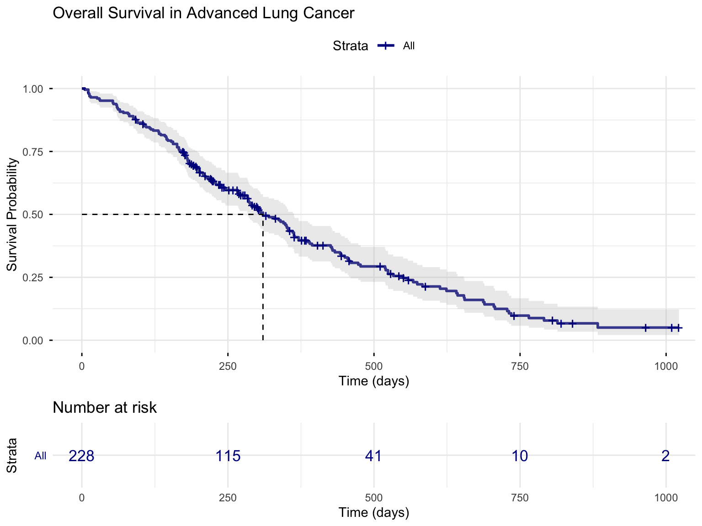
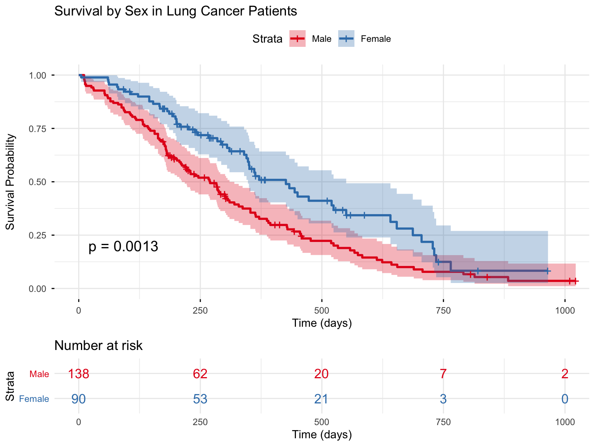
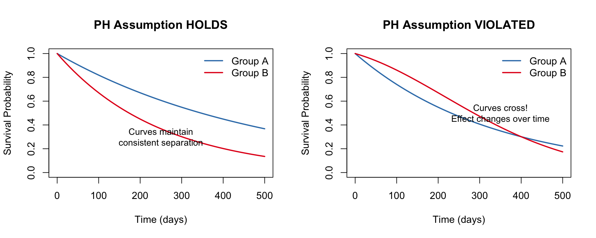
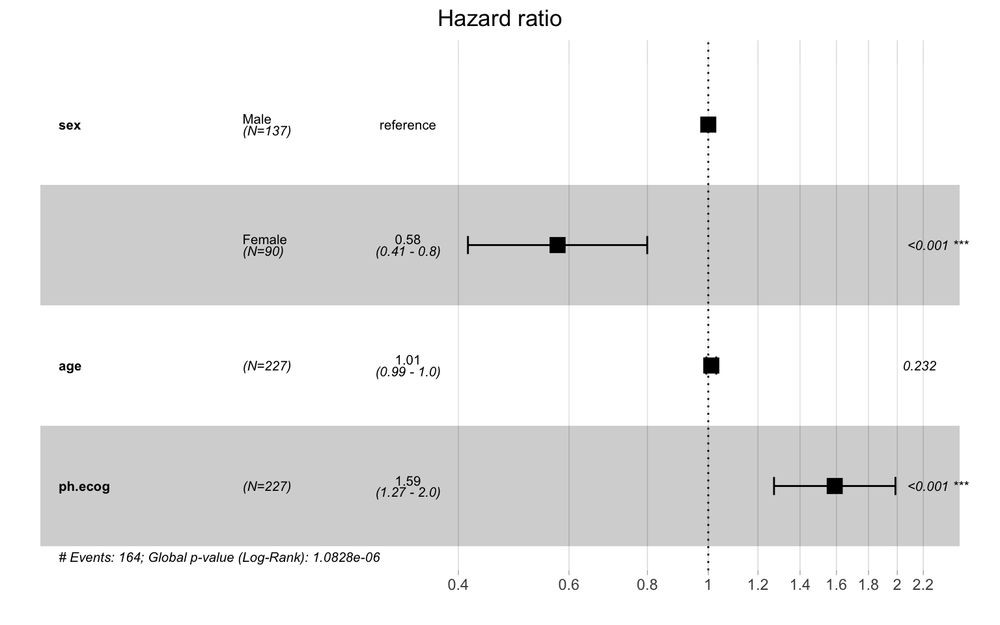
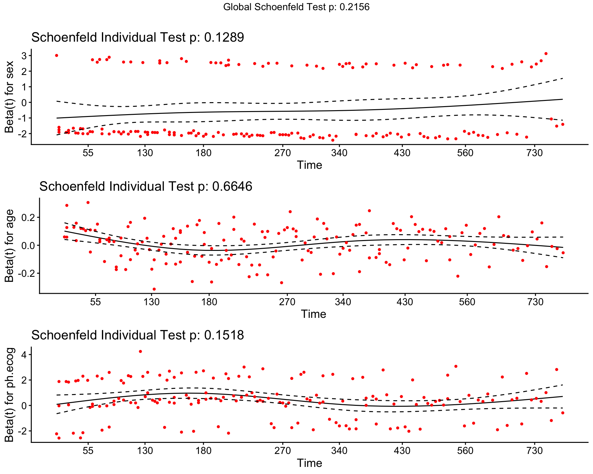
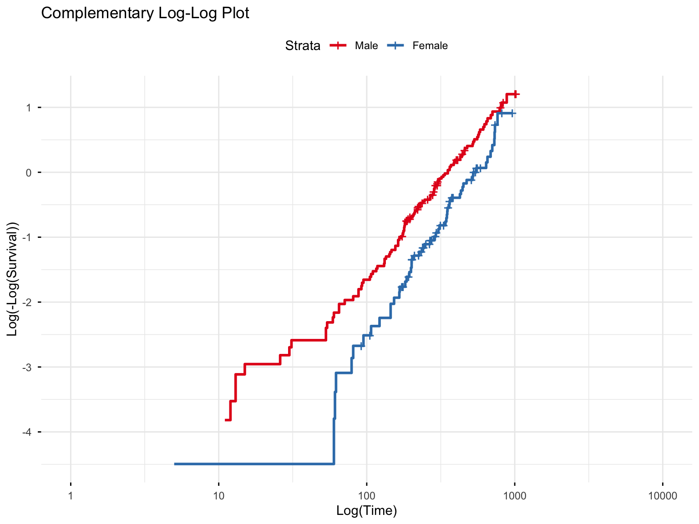
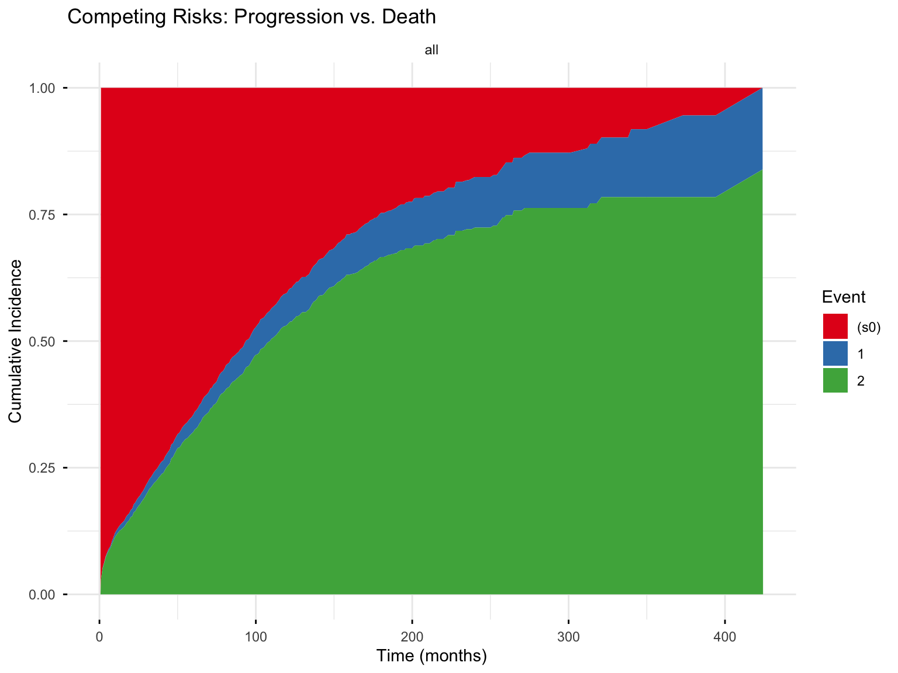

flowchart TD
A[Time-to-event outcome<br>with censoring] --> B{What is your<br>primary goal?}
B -->|Describe survival<br>or compare groups| C[**NON-PARAMETRIC**<br>Kaplan-Meier + log-rank]
B -->|Quantify covariate<br>effects| D[**SEMI-PARAMETRIC**<br>Cox model]
B -->|Predict absolute times<br>or extrapolate| E[**PARAMETRIC**<br>Weibull / AFT]
D --> F{Proportional<br>hazards holds?}
F -->|Yes| G[Report hazard ratios]
F -->|No| H[Stratify, time-varying<br>coefficients, or RMST]
style A fill:#E8E8E8,stroke:#333
style C fill:#C8E6C9,stroke:#333
style D fill:#FFECB3,stroke:#333
style E fill:#E3F2FD,stroke:#333
style H fill:#FFCDD2,stroke:#333
Survival Analysis
Abstract
This guide introduces survival analysis (the statistical study of time-to-event outcomes) for researchers across disciplines, from medicine and public health to political science, economics, criminology, and engineering. We begin with the fundamental concepts of time-to-event data and censoring, then map and work through the three families of methods: non-parametric estimation (Kaplan-Meier and Nelson-Aalen) and the log-rank test, the semi-parametric Cox proportional hazards model, and parametric models. Practical R implementations accompany every method, alongside assumption diagnostics, careful hazard-ratio interpretation, and advanced topics including competing risks, time-varying covariates, and restricted mean survival time.
Keywords
Survival Analysis, Time-to-Event Analysis, Kaplan-Meier Estimator, Nelson-Aalen Estimator, Cox Proportional Hazards, Log-Rank Test, Censoring, Hazard Ratio, Proportional Hazards Assumption, Competing Risks, Time-Varying Covariates, Restricted Mean Survival Time, Parametric Survival Models
1 Introduction
Survival analysis is a collection of statistical methods for studying a particular kind of outcome: the time until a well-defined event occurs. The name is an accident of the field’s origins in mortality and clinical research, but the methods are far more general. Any question of the form “how long until something happens, and what makes it happen sooner or later?” is a survival-analysis question, and such questions arise in nearly every discipline:
- Medicine and public health: time from diagnosis to death, disease recurrence, or hospital readmission.
- Political science: how long a government, regime, or peace agreement endures before it collapses.
- Criminology: time from release until re-arrest, the outcome known as recidivism.
- Sociology and demography: time from marriage to divorce, or from graduation to a first job.
- Labor economics: the length of an unemployment spell, or how long an employee stays before leaving a firm.
- Business and marketing: time until a subscriber cancels (churn) or a borrower defaults on a loan.
- Engineering and reliability: time until a machine or component fails.
What unites these examples—and what sets survival data apart from the outcomes handled by ordinary regression—is a feature called censoring. We rarely get to observe every subject until their event actually occurs. A patient may still be alive when the study ends; a marriage may still be intact at the final interview; a machine may be retired from service before it ever fails. In each case we do not learn the exact event time, only that it is longer than what we managed to observe. Discarding such subjects, or pretending that the study’s end date is the event time, throws away genuine information and biases the results. Survival analysis exists precisely to use this partial information correctly.
What Is Censoring?
A subject is censored when we know only a bound on their true event time rather than its exact value. The most common form is right censoring: the subject was event-free for as long as we observed them, so their true survival time lies somewhere to the right of our last observation. Censoring is the defining challenge of time-to-event data (it is the reason ordinary linear or logistic regression is not appropriate here) and we unpack its varieties in Section 2.2.
What You Will Learn
This guide is organized as a progression: we first learn to describe survival data, then to model it, and finally to handle the complications that real studies inevitably present. Each section builds on the one before:
- Key concepts (Section 2): the survival and hazard functions, and the types of censoring that make this data special.
- Choosing a method (Section 3): a map of the three families of survival methods (non-parametric, semi-parametric, and parametric) and how to decide among them.
- Kaplan-Meier estimation (Section 4): the workhorse non-parametric tool for estimating and plotting survival curves.
- The log-rank test (Section 5): comparing survival between groups.
- Cox proportional hazards regression (Section 6): the semi-parametric model that relates covariates to the hazard, together with how to read hazard ratios.
- Checking the proportional hazards assumption (Section 7): diagnostics and remedies when the central Cox assumption fails.
- Parametric models (Section 8): Weibull, exponential, and accelerated failure time models, and when a fully parametric approach earns its keep.
- Advanced topics (Section 9): competing risks, time-varying covariates, restricted mean survival time, and frailty models.
We close with reporting guidelines, frequently asked questions, and a quick-reference code appendix. Throughout, the worked examples use R with the survival and survminer packages. The datasets are clinical (they are the field’s canonical teaching sets) but the concepts and code carry over directly to the non-medical settings listed above.
2 Key Concepts and Terminology
2.1 Survival Data Structure
Survival data requires at minimum two variables:
| Variable | Description | Example |
|---|---|---|
| Time | Duration from study entry to event or censoring | Days from diagnosis to death |
| Status | Indicator of whether the event occurred (1) or was censored (0) | 1 = died, 0 = alive at last follow-up |
Additional covariates (predictors) may include treatment group, age, biomarkers, etc.
2.2 Censoring
Censoring occurs when we have incomplete information about a subject’s survival time. As the introduction emphasized, it is the feature that makes time-to-event data distinctive. Here we distinguish its three varieties, since each calls for slightly different handling.
2.2.1 Right Censoring
The event has not occurred by the end of observation. We know the survival time is at least as long as observed. For example, patient alive at study end, patient lost to follow-up, or patient withdrew from study.
2.2.2 Left Censoring
The event occurred before the start of observation, so we know only that the true event time lies to the left of our first measurement. For example, a participant who already tests positive for HIV at study entry was infected at some unknown earlier time: we know the infection happened before enrollment, but not exactly when.
2.2.3 Interval Censoring
The event occurred within a known time interval, but the exact time is unknown. For example, tumor recurrence detected at a follow-up visit; it occurred sometime since the last visit.
Key Assumption: Non-informative Censoring
Survival analysis assumes censoring is non-informative, meaning that the reason for censoring is unrelated to the probability of the event. If sicker patients are more likely to drop out, this assumption is violated, leading to biased estimates.
2.3 The Survival Function
The survival function \(S(t)\) gives the probability of surviving beyond time \(t\):
\[S(t) = P(T > t) = 1 - F(t)\]
where \(F(t)\) is the cumulative distribution function of survival times.
\(S(0) = 1\) (everyone alive at time 0)
\(S(\infty) = 0\) (eventually everyone experiences the event)
\(S(t)\) is monotonically decreasing
2.4 The Hazard Function
The hazard function \(h(t)\) (also called the hazard rate or instantaneous failure rate) represents the instantaneous risk of experiencing the event at time \(t\), given survival up to time \(t\):
\[h(t) = \lim_{\Delta t \to 0} \frac{P(t \leq T < t + \Delta t \mid T \geq t)}{\Delta t}\]
In plain language: among those who have survived to time \(t\), what is the rate of event occurrence at that very moment? The hazard is a rate, not a probability, and it can exceed 1.
2.5 Relationship Between Survival and Hazard
The survival and hazard functions are mathematically linked through the cumulative hazard function \(H(t)\):
\[H(t) = \int_0^t h(u) \, du = -\log S(t)\]
\[S(t) = \exp(-H(t))\]
This relationship is fundamental: if we can estimate the hazard, we can derive the survival function, and vice versa. It also explains why the same dataset can be summarized either through a survival curve or through a hazard, and why the methods in the rest of this guide can move freely between the two.
3 Choosing a Survival Method
Before fitting anything, it helps to see the landscape of survival methods as a whole. Nearly every technique in this guide belongs to one of three families, distinguished by how much each one assumes about the shape of the underlying hazard. As we move from the first family to the third, we trade flexibility for structure—and, when that structure is correct, we are rewarded with greater statistical efficiency and the ability to extrapolate beyond the data we actually observed.
| Family | Representative methods | What it assumes about the hazard | The question it answers | Strengths | Main limitations |
|---|---|---|---|---|---|
| Non-parametric | Kaplan-Meier estimator, Nelson-Aalen estimator, log-rank test | Nothing about its shape | “What does survival look like, and does it differ across groups?” | Minimal assumptions; ideal for description and visualization | No covariate adjustment; no single effect size; cannot extrapolate past the data |
| Semi-parametric | Cox proportional hazards model | Leaves the baseline hazard unspecified, but assumes covariates act multiplicatively and proportionally over time | “How much does each covariate raise or lower the hazard?” | Adjusts for many covariates with no distributional assumption; yields familiar hazard ratios | Depends on the proportional-hazards assumption; gives no absolute survival times without extra steps |
| Parametric | Exponential, Weibull, log-normal, log-logistic, Gompertz (in PH or AFT form) | A specific distributional form for survival times | “What is the absolute survival probability, and what happens beyond the observed follow-up?” | Most efficient if the distribution is correct; produces absolute predictions and smooth extrapolation | Misleading if the distribution is wrong; requires checking distributional fit |
The three families are complementary rather than competing, and a thorough analysis often uses all of them in sequence: a Kaplan-Meier curve to see the data, a Cox model to quantify covariate effects, and (where prediction matters) a parametric model to extrapolate.
A Practical Rule of Thumb
- Begin non-parametric (Kaplan-Meier and the log-rank test) to describe survival and compare groups with the fewest possible assumptions. This is almost always the right first step.
- Move to semi-parametric (the Cox model) when you want to quantify how covariates shift the hazard while adjusting for confounders, and you are willing to check the proportional-hazards assumption.
- Reach for a parametric model (Weibull or another accelerated failure time model) when you need absolute survival predictions, want to extrapolate beyond the observed follow-up, or have a scientific reason to believe in a particular hazard shape: for example, the wear-out failures of mechanical components.
The flowchart below traces the same logic from your research goal to a recommended method.
With this map in hand, we begin where almost every survival analysis begins—with the non-parametric Kaplan-Meier estimator.
4 Kaplan-Meier Estimation
The Kaplan-Meier (KM) estimator is a non-parametric method to estimate the survival function directly from observed data, accounting for censoring. Because it makes no assumption about the shape of the hazard, it is the natural starting point for describing time-to-event data and the first family of methods from our Section 3 map.
4.1 The Kaplan-Meier Formula
At each observed event time \(t_j\), the survival probability is updated:
\[\hat{S}(t) = \prod_{t_j \leq t} \left(1 - \frac{d_j}{n_j}\right)\]
where:
\(d_j\) = number of events at time \(t_j\)
\(n_j\) = number of subjects at risk just before time \(t_j\)
Product is over all event times up to \(t\)
The KM estimator creates a step function that drops at each event time and remains constant between events.
4.2 Example: Lung Cancer Survival
We’ll use the lung dataset from the survival package, which contains survival data from patients with advanced lung cancer.
Code
# Load the lung cancer dataset
data(lung)
# Examine the structure
str(lung)'data.frame': 228 obs. of 10 variables:
$ inst : num 3 3 3 5 1 12 7 11 1 7 ...
$ time : num 306 455 1010 210 883 ...
$ status : num 2 2 1 2 2 1 2 2 2 2 ...
$ age : num 74 68 56 57 60 74 68 71 53 61 ...
$ sex : num 1 1 1 1 1 1 2 2 1 1 ...
$ ph.ecog : num 1 0 0 1 0 1 2 2 1 2 ...
$ ph.karno : num 90 90 90 90 100 50 70 60 70 70 ...
$ pat.karno: num 100 90 90 60 90 80 60 80 80 70 ...
$ meal.cal : num 1175 1225 NA 1150 NA ...
$ wt.loss : num NA 15 15 11 0 0 10 1 16 34 ...Code
# Data dictionary for key variables
# time: survival time in days
# status: censoring status (1=censored, 2=dead) - we'll recode to standard 0/1
# sex: 1=Male, 2=Female
# age: age in years
# ph.ecog: ECOG performance score (0=asymptomatic, 5=dead)
# Recode status: 0=censored, 1=event (death)
lung <- lung %>%
mutate(
status = ifelse(status == 2, 1, 0),
sex = factor(sex, levels = c(1, 2), labels = c("Male", "Female"))
)
# Summary statistics
lung %>%
summarise(
n = n(),
events = sum(status),
censored = sum(status == 0),
median_time = median(time),
mean_age = mean(age, na.rm = TRUE)
) n events censored median_time mean_age
1 228 165 63 255.5 62.447374.2.1 Fitting a Kaplan-Meier Curve
The summary() of a Kaplan-Meier fit prints one row per event time: the survival probability immediately after each death, together with the number still at risk and a confidence interval. That makes it long but informative, so we confine it to a scrollable panel rather than truncating away the detail.
Code
# Create a survival object
# Surv(time, status) creates the time-to-event outcome
surv_obj <- Surv(time = lung$time, event = lung$status)
# Fit the Kaplan-Meier estimator (overall, no groups)
km_fit <- survfit(surv_obj ~ 1, data = lung)
# Summary of the KM estimate: one row per event time (scroll to read all)
summary(km_fit)Call: survfit(formula = surv_obj ~ 1, data = lung)
time n.risk n.event survival std.err lower 95% CI upper 95% CI
5 228 1 0.9956 0.00438 0.9871 1.000
11 227 3 0.9825 0.00869 0.9656 1.000
12 224 1 0.9781 0.00970 0.9592 0.997
13 223 2 0.9693 0.01142 0.9472 0.992
15 221 1 0.9649 0.01219 0.9413 0.989
26 220 1 0.9605 0.01290 0.9356 0.986
30 219 1 0.9561 0.01356 0.9299 0.983
31 218 1 0.9518 0.01419 0.9243 0.980
53 217 2 0.9430 0.01536 0.9134 0.974
54 215 1 0.9386 0.01590 0.9079 0.970
59 214 1 0.9342 0.01642 0.9026 0.967
60 213 2 0.9254 0.01740 0.8920 0.960
61 211 1 0.9211 0.01786 0.8867 0.957
62 210 1 0.9167 0.01830 0.8815 0.953
65 209 2 0.9079 0.01915 0.8711 0.946
71 207 1 0.9035 0.01955 0.8660 0.943
79 206 1 0.8991 0.01995 0.8609 0.939
81 205 2 0.8904 0.02069 0.8507 0.932
88 203 2 0.8816 0.02140 0.8406 0.925
92 201 1 0.8772 0.02174 0.8356 0.921
93 199 1 0.8728 0.02207 0.8306 0.917
95 198 2 0.8640 0.02271 0.8206 0.910
105 196 1 0.8596 0.02302 0.8156 0.906
107 194 2 0.8507 0.02362 0.8056 0.898
110 192 1 0.8463 0.02391 0.8007 0.894
116 191 1 0.8418 0.02419 0.7957 0.891
118 190 1 0.8374 0.02446 0.7908 0.887
122 189 1 0.8330 0.02473 0.7859 0.883
131 188 1 0.8285 0.02500 0.7810 0.879
132 187 2 0.8197 0.02550 0.7712 0.871
135 185 1 0.8153 0.02575 0.7663 0.867
142 184 1 0.8108 0.02598 0.7615 0.863
144 183 1 0.8064 0.02622 0.7566 0.859
145 182 2 0.7975 0.02667 0.7469 0.852
147 180 1 0.7931 0.02688 0.7421 0.848
153 179 1 0.7887 0.02710 0.7373 0.844
156 178 2 0.7798 0.02751 0.7277 0.836
163 176 3 0.7665 0.02809 0.7134 0.824
166 173 2 0.7577 0.02845 0.7039 0.816
167 171 1 0.7532 0.02863 0.6991 0.811
170 170 1 0.7488 0.02880 0.6944 0.807
175 167 1 0.7443 0.02898 0.6896 0.803
176 165 1 0.7398 0.02915 0.6848 0.799
177 164 1 0.7353 0.02932 0.6800 0.795
179 162 2 0.7262 0.02965 0.6704 0.787
180 160 1 0.7217 0.02981 0.6655 0.783
181 159 2 0.7126 0.03012 0.6559 0.774
182 157 1 0.7081 0.03027 0.6511 0.770
183 156 1 0.7035 0.03041 0.6464 0.766
186 154 1 0.6989 0.03056 0.6416 0.761
189 152 1 0.6943 0.03070 0.6367 0.757
194 149 1 0.6897 0.03085 0.6318 0.753
197 147 1 0.6850 0.03099 0.6269 0.749
199 145 1 0.6803 0.03113 0.6219 0.744
201 144 2 0.6708 0.03141 0.6120 0.735
202 142 1 0.6661 0.03154 0.6071 0.731
207 139 1 0.6613 0.03168 0.6020 0.726
208 138 1 0.6565 0.03181 0.5970 0.722
210 137 1 0.6517 0.03194 0.5920 0.717
212 135 1 0.6469 0.03206 0.5870 0.713
218 134 1 0.6421 0.03218 0.5820 0.708
222 132 1 0.6372 0.03231 0.5769 0.704
223 130 1 0.6323 0.03243 0.5718 0.699
226 126 1 0.6273 0.03256 0.5666 0.694
229 125 1 0.6223 0.03268 0.5614 0.690
230 124 1 0.6172 0.03280 0.5562 0.685
239 121 2 0.6070 0.03304 0.5456 0.675
245 117 1 0.6019 0.03316 0.5402 0.670
246 116 1 0.5967 0.03328 0.5349 0.666
267 112 1 0.5913 0.03341 0.5294 0.661
268 111 1 0.5860 0.03353 0.5239 0.656
269 110 1 0.5807 0.03364 0.5184 0.651
270 108 1 0.5753 0.03376 0.5128 0.645
283 104 1 0.5698 0.03388 0.5071 0.640
284 103 1 0.5642 0.03400 0.5014 0.635
285 101 2 0.5531 0.03424 0.4899 0.624
286 99 1 0.5475 0.03434 0.4841 0.619
288 98 1 0.5419 0.03444 0.4784 0.614
291 97 1 0.5363 0.03454 0.4727 0.608
293 94 1 0.5306 0.03464 0.4669 0.603
301 91 1 0.5248 0.03475 0.4609 0.597
303 89 1 0.5189 0.03485 0.4549 0.592
305 87 1 0.5129 0.03496 0.4488 0.586
306 86 1 0.5070 0.03506 0.4427 0.581
310 85 2 0.4950 0.03523 0.4306 0.569
320 82 1 0.4890 0.03532 0.4244 0.563
329 81 1 0.4830 0.03539 0.4183 0.558
337 79 1 0.4768 0.03547 0.4121 0.552
340 78 1 0.4707 0.03554 0.4060 0.546
345 77 1 0.4646 0.03560 0.3998 0.540
348 76 1 0.4585 0.03565 0.3937 0.534
350 75 1 0.4524 0.03569 0.3876 0.528
351 74 1 0.4463 0.03573 0.3815 0.522
353 73 2 0.4340 0.03578 0.3693 0.510
361 70 1 0.4278 0.03581 0.3631 0.504
363 69 2 0.4154 0.03583 0.3508 0.492
364 67 1 0.4092 0.03582 0.3447 0.486
371 65 2 0.3966 0.03581 0.3323 0.473
387 60 1 0.3900 0.03582 0.3258 0.467
390 59 1 0.3834 0.03582 0.3193 0.460
394 58 1 0.3768 0.03580 0.3128 0.454
426 55 1 0.3700 0.03580 0.3060 0.447
428 54 1 0.3631 0.03579 0.2993 0.440
429 53 1 0.3563 0.03576 0.2926 0.434
433 52 1 0.3494 0.03573 0.2860 0.427
442 51 1 0.3426 0.03568 0.2793 0.420
444 50 1 0.3357 0.03561 0.2727 0.413
450 48 1 0.3287 0.03555 0.2659 0.406
455 47 1 0.3217 0.03548 0.2592 0.399
457 46 1 0.3147 0.03539 0.2525 0.392
460 44 1 0.3076 0.03530 0.2456 0.385
473 43 1 0.3004 0.03520 0.2388 0.378
477 42 1 0.2933 0.03508 0.2320 0.371
519 39 1 0.2857 0.03498 0.2248 0.363
520 38 1 0.2782 0.03485 0.2177 0.356
524 37 2 0.2632 0.03455 0.2035 0.340
533 34 1 0.2554 0.03439 0.1962 0.333
550 32 1 0.2475 0.03423 0.1887 0.325
558 30 1 0.2392 0.03407 0.1810 0.316
567 28 1 0.2307 0.03391 0.1729 0.308
574 27 1 0.2221 0.03371 0.1650 0.299
583 26 1 0.2136 0.03348 0.1571 0.290
613 24 1 0.2047 0.03325 0.1489 0.281
624 23 1 0.1958 0.03297 0.1407 0.272
641 22 1 0.1869 0.03265 0.1327 0.263
643 21 1 0.1780 0.03229 0.1247 0.254
654 20 1 0.1691 0.03188 0.1169 0.245
655 19 1 0.1602 0.03142 0.1091 0.235
687 18 1 0.1513 0.03090 0.1014 0.226
689 17 1 0.1424 0.03034 0.0938 0.216
705 16 1 0.1335 0.02972 0.0863 0.207
707 15 1 0.1246 0.02904 0.0789 0.197
728 14 1 0.1157 0.02830 0.0716 0.187
731 13 1 0.1068 0.02749 0.0645 0.177
735 12 1 0.0979 0.02660 0.0575 0.167
765 10 1 0.0881 0.02568 0.0498 0.156
791 9 1 0.0783 0.02462 0.0423 0.145
814 7 1 0.0671 0.02351 0.0338 0.133
883 4 1 0.0503 0.02285 0.0207 0.123Code
import pandas as pd
from lifelines import KaplanMeierFitter
from lifelines.utils import median_survival_times
# Self-contained: load the shipped data and recode the status indicator
lung = pd.read_csv("lung.csv")
lung["status01"] = (lung["status"] == 2).astype(int) # 1 = death, 0 = censored
# Fit the Kaplan-Meier estimator (overall, no groups)
kmf = KaplanMeierFitter()
kmf.fit(lung["time"], event_observed=lung["status01"])
# Survival table (one row per event time) and the median survival time
print(kmf.survival_function_)
print(median_survival_times(kmf.survival_function_))Code
* st commands are built into Stata; no add-ons required.
import delimited "lung.csv", case(preserve) clear
gen status01 = (status == 2) // 1 = death, 0 = censored
stset time, failure(status01 == 1)
* Kaplan-Meier estimate (overall): survivor table plus median survival
sts list
stciCode
using Survival, DataFrames, CSV
# Self-contained: load the shipped data and recode the status indicator
lung = CSV.read("lung.csv", DataFrame; missingstring = "NA")
lung.status01 = Int.(lung.status .== 2) # 1 = death, 0 = censored
# Fit the Kaplan-Meier estimator (overall, no groups)
km = fit(KaplanMeier, lung.time, Bool.(lung.status01))
# Survival probability at each event time
DataFrame(time = km.events.time, survival = km.survival)
# Median survival = smallest event time with S(t) <= 0.5
median_time = km.events.time[findfirst(<=(0.5), km.survival)]Code
# Extract key survival statistics
km_summary <- surv_summary(km_fit)
head(km_summary) time n.risk n.event n.censor surv std.err upper lower
1 5 228 1 0 0.9956140 0.004395615 1.0000000 0.9870734
2 11 227 3 0 0.9824561 0.008849904 0.9996460 0.9655619
3 12 224 1 0 0.9780702 0.009916654 0.9972662 0.9592437
4 13 223 2 0 0.9692982 0.011786516 0.9919508 0.9471630
5 15 221 1 0 0.9649123 0.012628921 0.9890941 0.9413217
6 26 220 1 0 0.9605263 0.013425540 0.9861367 0.93558114.2.2 Visualizing the Survival Curve
Code
ggsurvplot(
km_fit,
data = lung,
conf.int = TRUE, # Show 95% CI
risk.table = TRUE, # Show number at risk table
risk.table.col = "strata",
ggtheme = theme_minimal(),
palette = "darkblue",
xlab = "Time (days)",
ylab = "Survival Probability",
title = "Overall Survival in Advanced Lung Cancer",
surv.median.line = "hv" # Add median survival line
)
4.2.3 Interpreting the Kaplan-Meier Curve
From the output, we can extract:
Code
# Median survival time with 95% CI
print(km_fit)Call: survfit(formula = surv_obj ~ 1, data = lung)
n events median 0.95LCL 0.95UCL
[1,] 228 165 310 285 363Interpretation: The estimated median survival time is 310 days. This means that 50% of patients are expected to survive beyond this time.
4.2.4 Survival Probability at Specific Time Points
Code
# Survival probability at specific time points (e.g., 6 months = 180 days, 1 year = 365 days)
summary(km_fit, times = c(180, 365, 500))Call: survfit(formula = surv_obj ~ 1, data = lung)
time n.risk n.event survival std.err lower 95% CI upper 95% CI
180 160 63 0.722 0.0298 0.666 0.783
365 65 58 0.409 0.0358 0.345 0.486
500 41 17 0.293 0.0351 0.232 0.371Code
import pandas as pd
from lifelines import KaplanMeierFitter
lung = pd.read_csv("lung.csv")
lung["status01"] = (lung["status"] == 2).astype(int)
kmf = KaplanMeierFitter().fit(lung["time"], event_observed=lung["status01"])
# Survival probability at 180, 365, and 500 days
print(kmf.predict([180, 365, 500]))Code
import delimited "lung.csv", case(preserve) clear
gen status01 = (status == 2)
stset time, failure(status01 == 1)
* Survival probability at specific time points
sts list, at(180 365 500)Code
using Survival, DataFrames, CSV
lung = CSV.read("lung.csv", DataFrame; missingstring = "NA")
lung.status01 = Int.(lung.status .== 2)
km = fit(KaplanMeier, lung.time, Bool.(lung.status01))
# Survival probability at a given time = S at the last event time <= t
St(t) = (i = findlast(<=(t), km.events.time); i === nothing ? 1.0 : km.survival[i])
[St(180), St(365), St(500)]Interpretation:
At 180 days (6 months), approximately 72.2% of patients are estimated to be alive.
At 365 days (1 year), approximately 40.9% are estimated to be alive.
4.3 The Nelson-Aalen Estimator
The Kaplan-Meier estimator targets the survival function \(S(t)\). Its close companion, the Nelson-Aalen estimator, targets the cumulative hazard \(H(t)\) instead. Because the two quantities are linked by \(S(t) = \exp(-H(t))\), the estimators carry the same information expressed in different coordinates. The Nelson-Aalen estimator accumulates the per-event hazard contributions,
\[\hat{H}(t) = \sum_{t_j \leq t} \frac{d_j}{n_j},\]
with \(d_j\) and \(n_j\) defined exactly as in the Kaplan-Meier formula above. It is the natural choice when the cumulative hazard is itself the quantity of interest (in reliability engineering, for instance, \(\hat{H}(t)\) counts the expected number of failures per surviving unit by time \(t\)) and it tends to behave slightly better than Kaplan-Meier in very small samples. In R it comes for free with any survfit object, in the cumhaz component:
Code
# Nelson-Aalen cumulative hazard, read directly from the survfit object
head(data.frame(time = km_fit$time, cumhaz = km_fit$cumhaz)) time cumhaz
1 5 0.004385965
2 11 0.017601824
3 12 0.022066110
4 13 0.031034720
5 15 0.035559606
6 26 0.040105061Code
import pandas as pd
from lifelines import NelsonAalenFitter
lung = pd.read_csv("lung.csv")
lung["status01"] = (lung["status"] == 2).astype(int)
# Nelson-Aalen cumulative hazard estimator
naf = NelsonAalenFitter().fit(lung["time"], event_observed=lung["status01"])
print(naf.cumulative_hazard_.head(7))Code
import delimited "lung.csv", case(preserve) clear
gen status01 = (status == 2)
stset time, failure(status01 == 1)
* Nelson-Aalen cumulative hazard
sts list, naCode
using Survival, DataFrames, CSV
lung = CSV.read("lung.csv", DataFrame; missingstring = "NA")
lung.status01 = Int.(lung.status .== 2)
# Nelson-Aalen cumulative hazard estimator
na = fit(NelsonAalen, lung.time, Bool.(lung.status01))
first(DataFrame(time = na.events.time, cumhaz = na.chaz), 6)5 Comparing Survival Curves: The Log-Rank Test
A Kaplan-Meier curve describes survival in a single sample, but research questions are usually comparative: does one treatment outlast another, does one regime type survive longer than another, do customers on one subscription plan churn faster than those on another? To compare survival between groups (e.g., treatment vs. control, male vs. female), we use the log-rank test (also called the Mantel-Cox test). It remains within the non-parametric family, so it inherits the Kaplan-Meier estimator’s freedom from distributional assumptions.
5.1 The Log-Rank Test
The log-rank test compares, at every event time, the observed number of events in each group to the expected number under the null hypothesis that survival is identical across groups, then accumulates those differences. The intuition is a familiar observed-versus-expected comparison,
\[\chi^2 \approx \frac{(O_1 - E_1)^2}{E_1} + \frac{(O_2 - E_2)^2}{E_2},\]
where \(O_g\) and \(E_g\) are the total observed and expected events in group \(g\). This Pearson-style form is a useful mnemonic, but it is not exactly what software computes. The actual Mantel-Cox statistic standardizes the observed–expected difference by its proper variance,
\[\chi^2 = \frac{(O_1 - E_1)^2}{V},\]
where \(V\) is the sum over event times of the hypergeometric variance of the group-1 event count in each \(2\times2\) risk table. Because \(V \neq E_1\), the two formulas differ slightly: on the lung-cancer example below the approximation gives \(\chi^2 \approx 10.23\), whereas survdiff() reports the exact \(\chi^2 \approx 10.33\) (here \(V \approx 40.4\), versus \(E_1 \approx 91.6\)). Always report the value survdiff() returns.
Log-Rank Test Assumptions
- Right censoring only
- Non-informative censoring (censoring independent of survival)
- Proportional hazards (the ratio of hazards between groups is constant over time)
5.2 Example: Survival by Sex
Code
# Fit KM curves stratified by sex
km_sex <- survfit(Surv(time, status) ~ sex, data = lung)
print(km_sex)Call: survfit(formula = Surv(time, status) ~ sex, data = lung)
n events median 0.95LCL 0.95UCL
sex=Male 138 112 270 212 310
sex=Female 90 53 426 348 550Code
ggsurvplot(
km_sex,
data = lung,
pval = TRUE, # Show log-rank p-value
conf.int = TRUE,
risk.table = TRUE,
risk.table.col = "strata",
legend.labs = c("Male", "Female"),
palette = c("#E41A1C", "#377EB8"),
ggtheme = theme_minimal(),
xlab = "Time (days)",
ylab = "Survival Probability",
title = "Survival by Sex in Lung Cancer Patients"
)
5.2.1 Performing the Log-Rank Test
Code
# Formal log-rank test
logrank_test <- survdiff(Surv(time, status) ~ sex, data = lung)
print(logrank_test)Call:
survdiff(formula = Surv(time, status) ~ sex, data = lung)
N Observed Expected (O-E)^2/E (O-E)^2/V
sex=Male 138 112 91.6 4.55 10.3
sex=Female 90 53 73.4 5.68 10.3
Chisq= 10.3 on 1 degrees of freedom, p= 0.001 Code
import pandas as pd
from lifelines.statistics import logrank_test
lung = pd.read_csv("lung.csv")
lung["status01"] = (lung["status"] == 2).astype(int)
m, f = lung[lung["sex"] == 1], lung[lung["sex"] == 2]
# Formal log-rank test comparing the two sexes
result = logrank_test(m["time"], f["time"],
event_observed_A=m["status01"], event_observed_B=f["status01"])
result.print_summary()
print("chisq =", result.test_statistic, " p =", result.p_value)Code
import delimited "lung.csv", case(preserve) clear
gen status01 = (status == 2)
stset time, failure(status01 == 1)
* Formal log-rank (Mantel-Cox) test
sts test sexCode
# Survival.jl has no built-in log-rank test, so we compute the Mantel-Cox
# statistic directly from its definition (sum over event times of the
# observed-minus-expected group-1 events, standardised by the hypergeometric
# variance). This reproduces survdiff()/sts test exactly.
using DataFrames, CSV
lung = CSV.read("lung.csv", DataFrame; missingstring = "NA")
lung.status01 = Int.(lung.status .== 2)
lung.female = Int.(lung.sex .== 2)
function logrank(time, status, group)
ts = sort(unique(time[status .== 1])) # distinct event times
O1 = 0.0; E1 = 0.0; V = 0.0
for t in ts
atrisk = time .>= t
n = count(atrisk)
n1 = count(atrisk .& (group .== 1))
d = count((time .== t) .& (status .== 1))
d1 = count((time .== t) .& (status .== 1) .& (group .== 1))
O1 += d1
E1 += d * n1 / n
n > 1 && (V += d * (n1/n) * (1 - n1/n) * (n - d) / (n - 1))
end
(chisq = (O1 - E1)^2 / V, df = 1)
end
logrank(lung.time, lung.status01, lung.female)Interpretation: The log-rank test yields \(\chi^2\) = 10.33 with p = 0.0013. This indicates a statistically significant difference in survival between males and females, with females having better survival.
5.3 Variants of the Log-Rank Test
The standard log-rank test gives equal weight to all time points, but variants can place more weight where differences are expected. In R, survdiff() implements the \(G^{\rho}\) family of Fleming and Harrington, which weights each event by \(\hat{S}(t)^{\rho}\):
| Test | R option | Weighting | Best when |
|---|---|---|---|
| Log-rank (Mantel-Cox) | rho = 0 |
Equal weight at all times | Hazards are proportional throughout follow-up |
| Peto-Peto (Gehan-Wilcoxon family) | rho = 1 |
Weights by \(\hat{S}(t)\), emphasizing early events | Differences are concentrated early; more robust to heavy censoring |
Setting rho = 0 recovers the standard log-rank test, while rho = 1 gives the Peto-Peto modification of the Wilcoxon test. (The classic Gehan-Breslow weighting by the number still at risk is not available through survdiff(); the FHtest or coin packages provide it if you need it.)
Code
# Peto-Peto test: rho = 1 places more weight on early events
survdiff(Surv(time, status) ~ sex, data = lung, rho = 1)Call:
survdiff(formula = Surv(time, status) ~ sex, data = lung, rho = 1)
N Observed Expected (O-E)^2/E (O-E)^2/V
sex=Male 138 70.4 55.6 3.95 12.7
sex=Female 90 28.7 43.5 5.04 12.7
Chisq= 12.7 on 1 degrees of freedom, p= 4e-04 6 Cox Proportional Hazards Regression
The Kaplan-Meier estimator and the log-rank test describe and compare survival, but they cannot tell us how much a continuous covariate such as age matters, nor adjust one variable’s effect for another. For that we need regression, and the Cox proportional hazards model is by far the most widely used regression method for survival data. As the semi-parametric member of our Section 3 map, it relates any number of covariates to the hazard while accounting for censoring—and, crucially, without committing to a particular shape for the baseline hazard.
The Cox Model’s Assumptions at a Glance
It is good practice to state what a model asks of your data before you fit it. The Cox model rests on three assumptions:
- Proportional hazards. The hazard ratio between any two individuals is constant over time. This is the model’s signature assumption (defined and illustrated just below) and the one most often violated.
- Non-informative censoring. Whether a subject is censored is unrelated to their underlying risk of the event (introduced in Section 2.2).
- Log-linear, additive covariate effects. Each covariate enters the log-hazard linearly and additively, so that effects multiply on the hazard scale.
Stating these now lets us read the output honestly. The first assumption is important enough, and checkable enough, that we devote an entire section to verifying it: see Section 7.
6.1 The Cox Model Formulation
The Cox model specifies the hazard at time \(t\) for an individual with covariates \(\mathbf{X}\) as:
\[h(t|\mathbf{X}) = h_0(t) \exp(\beta_1 X_1 + \beta_2 X_2 + \cdots + \beta_p X_p)\]
where:
\(h_0(t)\) is the baseline hazard (hazard when all \(X = 0\))
\(\exp(\beta_j)\) is the hazard ratio for a one-unit increase in \(X_j\)
Key Features:
- Semi-parametric: No assumption about the shape of \(h_0(t)\)
- Proportional hazards: The ratio of hazards for two individuals is constant over time
- Hazard ratios: Coefficients exponentiate to give hazard ratios
6.2 The Proportional Hazards Assumption
The model’s defining assumption is hidden in its name: hazard ratios are taken to be constant over time. For two individuals with covariate vectors \(\mathbf{X}\) and \(\mathbf{X}^*\), the ratio of their hazards is
\[\frac{h(t \mid \mathbf{X})}{h(t \mid \mathbf{X}^*)} = \exp[\boldsymbol{\beta}'(\mathbf{X} - \mathbf{X}^*)],\]
which carries no \(t\) on the right-hand side and is therefore constant. The reason is worth pausing on: the baseline hazard \(h_0(t)\) appears in both the numerator and the denominator and cancels exactly, leaving a ratio that does not depend on time. That same cancellation is what frees the Cox model from ever having to specify \(h_0(t)\).
In plain language: if a treatment reduces the hazard of death by 50% relative to placebo, that 50% reduction is assumed to hold at day 1, at day 100, and at day 500—at every instant of follow-up. Equivalently, the survival curves for two groups should never cross; any crossing beyond sampling noise is a red flag.
6.2.1 Visual Intuition
Code
# Create illustrative data for PH vs non-PH
set.seed(123)
time_seq <- seq(0, 500, by = 10)
# PH holds: constant hazard ratio
surv_a_ph <- exp(-0.002 * time_seq)
surv_b_ph <- exp(-0.004 * time_seq) # 2x hazard, constant over time
# PH violated: hazard ratio changes over time
surv_a_nph <- exp(-0.003 * time_seq)
surv_b_nph <- exp(-0.001 * time_seq - 0.000005 * time_seq^2)
par(mfrow = c(1, 2))
# Plot 1: PH holds
plot(time_seq, surv_a_ph, type = "l", col = "#377EB8", lwd = 2,
xlab = "Time (days)", ylab = "Survival Probability",
main = "PH Assumption HOLDS", ylim = c(0, 1))
lines(time_seq, surv_b_ph, col = "#E41A1C", lwd = 2)
legend("topright", c("Group A", "Group B"), col = c("#377EB8", "#E41A1C"),
lwd = 2, bty = "n")
text(250, 0.3, "Curves maintain\nconsistent separation", cex = 0.9)
# Plot 2: PH violated
plot(time_seq, surv_a_nph, type = "l", col = "#377EB8", lwd = 2,
xlab = "Time (days)", ylab = "Survival Probability",
main = "PH Assumption VIOLATED", ylim = c(0, 1))
lines(time_seq, surv_b_nph, col = "#E41A1C", lwd = 2)
legend("topright", c("Group A", "Group B"), col = c("#377EB8", "#E41A1C"),
lwd = 2, bty = "n")
text(350, 0.5, "Curves cross!\nEffect changes over time", cex = 0.9)
par(mfrow = c(1, 1))
6.2.2 Why the Assumption Matters
When proportional hazards holds, a single hazard ratio is a faithful one-number summary of an effect. When it fails, that number degrades into an average over time that may describe no particular moment well.
| If PH holds… | If PH is violated… |
|---|---|
| The hazard ratio has a clear, constant interpretation | The hazard ratio is a time-averaged blend that may apply at no single moment |
| Cox model results are valid | Results may be misleading or biased |
| One HR summarizes the whole effect | The effect depends on when you measure it |
Such violations are common, and they are easy to picture. In oncology, a new chemotherapy might cut the hazard sharply at first but lose its edge as resistance develops, so the survival curves converge or even cross. The same pattern arises far from medicine: a job-training program may speed re-employment in the first few months yet make little difference a year later, and a promotional discount may suppress customer churn briefly before its effect fades. In each case a single “average” hazard ratio understates the early effect and overstates the late one.
We will not simply hope the assumption holds. Section 7 is devoted to checking it—with a formal test, residual plots, and a decision framework for when it fails. For now we take it as given, so that we can fit and read our first models.
6.3 Interpreting the Hazard Ratio
The hazard ratio (HR) is the quantity the Cox model exists to deliver, so it repays careful reading. The HR for a covariate is \(\exp(\beta)\): the multiplicative factor by which the hazard changes for a one-unit increase in that covariate, holding the others fixed. Its natural reference point is one, not zero:
- HR = 1: no association. The covariate leaves the hazard unchanged; this is the null value.
- HR > 1: the covariate increases the hazard, i.e. shortens survival. An HR of 1.5 corresponds to a 50% higher instantaneous risk.
- HR < 1: the covariate decreases the hazard, i.e. lengthens survival. An HR of 0.6 corresponds to a 40% lower instantaneous risk.
For a protective effect (HR below one), a convenient way to communicate the magnitude is as a percentage reduction in risk:
\[\text{Risk reduction} = 100 \times (1 - \text{HR})\,\%.\]
In plain language: an HR of 0.59 means the hazard in one group is 59% of the hazard in the other: a \(100 \times (1 - 0.59) = 41\%\) lower risk of the event at any given instant (Sashegyi and Ferry 2017).
Because the hazard ratio is centered on one, so is its confidence interval, and this routinely trips up readers who are used to coefficients on the original additive scale. There, the null value is zero and a confidence interval signals significance by excluding zero. On the hazard-ratio scale the logic is identical but the landmark shifts: a 95% confidence interval that excludes 1 indicates a statistically significant association, whereas an interval that straddles 1 (say, 0.85 to 1.20) does not. The interval is also asymmetric around the point estimate (it is symmetric on the log scale and then exponentiated) so do not expect the familiar “estimate ± margin” symmetry. Anchoring every reading on 1 keeps these facts straight.
A Hazard Ratio Is Not a Relative Risk
It is tempting to read “HR = 2” as “twice as likely to experience the event,” but that is a statement about relative risk (a ratio of cumulative probabilities), not about the hazard (a ratio of instantaneous rates among those still at risk). The two can diverge substantially, especially when events are common. We revisit this trap, with others, among the common pitfalls in Section 10.3.
6.4 Fitting a Cox Model
6.4.1 Simple Model (Single Predictor)
Code
# Cox model with sex as predictor
cox_sex <- coxph(Surv(time, status) ~ sex, data = lung)
summary(cox_sex)Call:
coxph(formula = Surv(time, status) ~ sex, data = lung)
n= 228, number of events= 165
coef exp(coef) se(coef) z Pr(>|z|)
sexFemale -0.5310 0.5880 0.1672 -3.176 0.00149 **
---
Signif. codes: 0 '***' 0.001 '**' 0.01 '*' 0.05 '.' 0.1 ' ' 1
exp(coef) exp(-coef) lower .95 upper .95
sexFemale 0.588 1.701 0.4237 0.816
Concordance= 0.579 (se = 0.021 )
Likelihood ratio test= 10.63 on 1 df, p=0.001
Wald test = 10.09 on 1 df, p=0.001
Score (logrank) test = 10.33 on 1 df, p=0.001Code
import pandas as pd
from lifelines import CoxPHFitter
lung = pd.read_csv("lung.csv")
lung["status01"] = (lung["status"] == 2).astype(int)
lung["female"] = (lung["sex"] == 2).astype(int) # reference = Male
# Cox model with sex as predictor (lifelines uses Efron ties, as does R)
cph = CoxPHFitter()
cph.fit(lung[["time", "status01", "female"]], duration_col="time", event_col="status01")
cph.print_summary()Code
import delimited "lung.csv", case(preserve) clear
gen status01 = (status == 2)
gen female = (sex == 2)
stset time, failure(status01 == 1)
* Cox model with sex as predictor.
* Stata defaults to Breslow ties; 'efron' matches R/Python/Julia.
stcox i.female, efronCode
using Survival, DataFrames, CSV, StatsModels
lung = CSV.read("lung.csv", DataFrame; missingstring = "NA")
lung.status01 = Int.(lung.status .== 2)
lung.female = Int.(lung.sex .== 2) # reference = Male
lung.ev = EventTime.(lung.time, Bool.(lung.status01))
# Cox model with sex as predictor (Survival.jl uses Efron ties, as does R)
cox_sex = coxph(@formula(ev ~ female), lung)Interpretation of Hazard Ratios:
Code
# Extract hazard ratio with 95% CI
tidy(cox_sex, exponentiate = TRUE, conf.int = TRUE)# A tibble: 1 × 7
term estimate std.error statistic p.value conf.low conf.high
<chr> <dbl> <dbl> <dbl> <dbl> <dbl> <dbl>
1 sexFemale 0.588 0.167 -3.18 0.00149 0.424 0.816The hazard ratio for females vs. males is 0.588. This means:
Females have a 41.2% lower hazard of death compared to males (HR = 0.59, 95% CI: 0.42–0.82, p = 0.0015).
6.4.2 Multivariable Cox Model
Code
# Remove observations with missing values for model variables
lung_complete <- lung %>%
filter(!is.na(ph.ecog) & !is.na(age) & !is.na(sex))
# Multivariable Cox model
cox_multi <- coxph(
Surv(time, status) ~ sex + age + ph.ecog,
data = lung_complete
)
summary(cox_multi)Call:
coxph(formula = Surv(time, status) ~ sex + age + ph.ecog, data = lung_complete)
n= 227, number of events= 164
coef exp(coef) se(coef) z Pr(>|z|)
sexFemale -0.552612 0.575445 0.167739 -3.294 0.000986 ***
age 0.011067 1.011128 0.009267 1.194 0.232416
ph.ecog 0.463728 1.589991 0.113577 4.083 4.45e-05 ***
---
Signif. codes: 0 '***' 0.001 '**' 0.01 '*' 0.05 '.' 0.1 ' ' 1
exp(coef) exp(-coef) lower .95 upper .95
sexFemale 0.5754 1.7378 0.4142 0.7994
age 1.0111 0.9890 0.9929 1.0297
ph.ecog 1.5900 0.6289 1.2727 1.9864
Concordance= 0.637 (se = 0.025 )
Likelihood ratio test= 30.5 on 3 df, p=1e-06
Wald test = 29.93 on 3 df, p=1e-06
Score (logrank) test = 30.5 on 3 df, p=1e-06Code
import pandas as pd
from lifelines import CoxPHFitter
lung = pd.read_csv("lung.csv")
lung["status01"] = (lung["status"] == 2).astype(int)
lung["female"] = (lung["sex"] == 2).astype(int)
lung = lung.rename(columns={"ph.ecog": "ph_ecog"})
# Remove observations with missing values for model variables
lung_complete = lung.dropna(subset=["ph_ecog", "age", "sex"])
# Multivariable Cox model
cph = CoxPHFitter()
cph.fit(lung_complete[["time", "status01", "female", "age", "ph_ecog"]],
duration_col="time", event_col="status01")
cph.print_summary()Code
import delimited "lung.csv", case(preserve) clear
gen status01 = (status == 2)
gen female = (sex == 2)
* phecog/age missing values are dropped automatically by stcox (complete cases)
stset time, failure(status01 == 1)
* Multivariable Cox model (Efron ties to match R)
stcox i.female age phecog, efronCode
using Survival, DataFrames, CSV, StatsModels
lung = CSV.read("lung.csv", DataFrame; missingstring = "NA")
lung.status01 = Int.(lung.status .== 2)
lung.female = Int.(lung.sex .== 2)
rename!(lung, Symbol("ph.ecog") => :ph_ecog)
# Remove observations with missing values for model variables
lung_complete = dropmissing(lung, [:age, :ph_ecog])
lung_complete.ev = EventTime.(lung_complete.time, Bool.(lung_complete.status01))
# Multivariable Cox model
cox_multi = coxph(@formula(ev ~ female + age + ph_ecog), lung_complete)Code
# Tidy table of results
cox_table <- tidy(cox_multi, exponentiate = TRUE, conf.int = TRUE) %>%
mutate(
term = case_when(
term == "sexFemale" ~ "Sex (Female vs. Male)",
term == "age" ~ "Age (per year)",
term == "ph.ecog" ~ "ECOG Score (per unit)"
),
across(where(is.numeric), ~round(., 3))
) %>%
select(term, estimate, conf.low, conf.high, p.value) %>%
rename(
"Variable" = term,
"Hazard Ratio" = estimate,
"95% CI Lower" = conf.low,
"95% CI Upper" = conf.high,
"p-value" = p.value
)
kable(cox_table)| Variable | Hazard Ratio | 95% CI Lower | 95% CI Upper | p-value |
|---|---|---|---|---|
| Sex (Female vs. Male) | 0.575 | 0.414 | 0.799 | 0.001 |
| Age (per year) | 1.011 | 0.993 | 1.030 | 0.232 |
| ECOG Score (per unit) | 1.590 | 1.273 | 1.986 | 0.000 |
Interpretation:
After adjusting for age and ECOG performance status:
- Sex: Females have a 42% lower hazard of death compared to males (HR = 0.58).
- Age: Each additional year of age increases the hazard of death by 1.1%.
- ECOG Score: Each one-unit increase in ECOG score (worse functional status) increases the hazard of death by 59%.
6.4.3 Visualizing Hazard Ratios: Forest Plot
Code
ggforest(cox_multi, data = lung_complete)
6.5 Model Fit and Comparison
Assessing model fit is essential for:
- Model validation: Does the model adequately describe the data?
- Variable selection: Should additional covariates be included?
- Model comparison: Which of several candidate models performs best?
- Practical utility: Is the model useful for prediction or risk stratification: of patients, borrowers, customers, or components?
6.5.1 Concordance Index (C-statistic)
The concordance index (C-index or C-statistic) measures the model’s discriminative ability: its capacity to correctly rank subjects by their risk, whether those subjects are patients, loan applicants, customers, or mechanical components. Specifically, it answers: “for a random pair of subjects, what is the probability that the model correctly identifies which one experiences the event first?”
\[C = P(\hat{h}_i > \hat{h}_j \mid T_i < T_j)\]
where \(\hat{h}\) is the predicted hazard and \(T\) is the observed survival time.
| C-statistic | Interpretation | Practical Meaning |
|---|---|---|
| 0.50 | No discrimination | Model no better than random chance |
| 0.50–0.60 | Poor | Limited practical utility |
| 0.60–0.70 | Moderate | Some predictive value |
| 0.70–0.80 | Good | Useful discrimination in practice |
| 0.80–0.90 | Excellent | Strong predictive model |
| > 0.90 | Outstanding | Rarely achieved in applied work |
Code
# Extract concordance
conc <- concordance(cox_multi)
concCall:
concordance.coxph(object = cox_multi)
n= 227
Concordance= 0.6371 se= 0.02507
concordant discordant tied.x tied.y tied.xy
12544 7117 126 28 0 Code
import pandas as pd
from lifelines import CoxPHFitter
lung = pd.read_csv("lung.csv")
lung["status01"] = (lung["status"] == 2).astype(int)
lung["female"] = (lung["sex"] == 2).astype(int)
lung = lung.rename(columns={"ph.ecog": "ph_ecog"})
lung_complete = lung.dropna(subset=["ph_ecog", "age", "sex"])
cph = CoxPHFitter().fit(
lung_complete[["time", "status01", "female", "age", "ph_ecog"]],
duration_col="time", event_col="status01")
# Harrell's concordance index is stored on the fitted model
print("Concordance =", round(cph.concordance_index_, 5))Code
import delimited "lung.csv", case(preserve) clear
gen status01 = (status == 2)
gen female = (sex == 2)
stset time, failure(status01 == 1)
stcox i.female age phecog, efron
* Harrell's C concordance statistic
estat concordanceCode
# Survival.jl does not export a concordance routine, so we compute Harrell's C
# directly: over every comparable pair (the subject with an event having the
# earlier time), the fraction the risk score orders correctly (ties count 1/2).
using Survival, DataFrames, CSV, StatsModels
lung = CSV.read("lung.csv", DataFrame; missingstring = "NA")
lung.status01 = Int.(lung.status .== 2); lung.female = Int.(lung.sex .== 2)
rename!(lung, Symbol("ph.ecog") => :ph_ecog)
lc = dropmissing(lung, [:age, :ph_ecog])
lc.ev = EventTime.(lc.time, Bool.(lc.status01))
cox_multi = coxph(@formula(ev ~ female + age + ph_ecog), lc)
function harrell_c(risk, t, d)
conc = disc = tied = 0.0
n = length(t)
for i in 1:n, j in 1:n
if d[i] == 1 && t[i] < t[j]
if risk[i] > risk[j]; conc += 1
elseif risk[i] < risk[j]; disc += 1
else tied += 1 end
end
end
(conc + 0.5 * tied) / (conc + disc + tied)
end
risk = Matrix(lc[!, [:female, :age, :ph_ecog]]) * coef(cox_multi)
harrell_c(risk, lc.time, lc.status01)Interpretation of output:
- Concordance: 0.637 means that for 63.7% of all comparable subject pairs, the model correctly predicted which subject would experience the event first.
- Standard error (se): Indicates precision of the estimate; used to compute confidence intervals.
- Concordant/Discordant pairs: Raw counts of correctly vs. incorrectly ordered pairs.
Code
# Calculate 95% CI for concordance
conc_ci <- c(
conc$concordance - 1.96 * sqrt(conc$var),
conc$concordance + 1.96 * sqrt(conc$var)
)
cat("C-statistic: ", round(conc$concordance, 3),
" (95% CI: ", round(conc_ci[1], 3), "-", round(conc_ci[2], 3), ")\n", sep = "")C-statistic: 0.637 (95% CI: 0.588-0.686)
When to Use the C-statistic
- Prognostic and risk-scoring models: when the goal is to predict outcomes and stratify risk: a clinical prognosis, a credit score, a churn-propensity model.
- Comparing models: a higher C-statistic means better discrimination, though a difference may be too small to matter in practice.
- Not for causal inference: if your aim is to estimate the effect of a treatment or policy, focus on hazard ratios, not prediction accuracy.
6.5.2 AIC and BIC for Model Selection
Akaike Information Criterion (AIC) and Bayesian Information Criterion (BIC) balance model fit against complexity. Lower values indicate better models.
\[\text{AIC} = -2 \log L + 2k\]
\[\text{BIC} = -2 \log L + k \log(n)\]
where \(L\) is the likelihood, \(k\) is the number of parameters, and \(n\) is the sample size (number of events for survival models).
- AIC: Penalizes complexity less; may favor more complex models
- BIC: Stronger penalty for complexity; favors simpler models
Code
# Compare models using AIC and BIC
cox_sex_only <- coxph(Surv(time, status) ~ sex, data = lung_complete)
cox_sex_age <- coxph(Surv(time, status) ~ sex + age, data = lung_complete)
cox_full <- cox_multi # sex + age + ph.ecog
# Create comparison table
model_comparison <- data.frame(
Model = c("Sex only", "Sex + Age", "Sex + Age + ECOG"),
Variables = c(1, 2, 3),
AIC = c(AIC(cox_sex_only), AIC(cox_sex_age), AIC(cox_full)),
BIC = c(BIC(cox_sex_only), BIC(cox_sex_age), BIC(cox_full)),
Concordance = c(
concordance(cox_sex_only)$concordance,
concordance(cox_sex_age)$concordance,
concordance(cox_full)$concordance
)
)
model_comparison %>%
mutate(across(where(is.numeric), ~round(., 3))) %>%
kable()| Model | Variables | AIC | BIC | Concordance |
|---|---|---|---|---|
| Sex only | 1 | 1480.662 | 1483.762 | 0.577 |
| Sex + Age | 2 | 1479.085 | 1485.284 | 0.602 |
| Sex + Age + ECOG | 3 | 1464.460 | 1473.760 | 0.637 |
Interpretation:
- The full model (Sex + Age + ECOG) has the lowest AIC (1464.5), indicating best balance of fit and parsimony.
- Adding ECOG score improves the model substantially (AIC decrease of 14.6 points).
- Rule of thumb: AIC difference > 10 suggests strong evidence favoring the lower-AIC model.
6.5.3 Likelihood Ratio Test (LRT)
The Likelihood Ratio Test formally tests whether adding variables significantly improves model fit. It compares nested models (one model must be a subset of the other).
\[LRT = -2(\log L_{reduced} - \log L_{full}) \sim \chi^2_{df}\]
where \(df\) = difference in number of parameters.
When to use LRT:
- Testing whether a specific variable (or set of variables) significantly improves the model
- Comparing nested models only (for non-nested models, use AIC/BIC)
Code
# Compare nested models: Does adding age and ECOG improve over sex alone?
cox_reduced <- coxph(Surv(time, status) ~ sex, data = lung_complete)
anova(cox_reduced, cox_multi, test = "LRT")Analysis of Deviance Table
Cox model: response is Surv(time, status)
Model 1: ~ sex
Model 2: ~ sex + age + ph.ecog
loglik Chisq Df Pr(>|Chi|)
1 -739.33
2 -729.23 20.202 2 4.105e-05 ***
---
Signif. codes: 0 '***' 0.001 '**' 0.01 '*' 0.05 '.' 0.1 ' ' 1Interpretation of output:
- loglik: Log-likelihood for each model (higher = better fit)
- Chisq: The LRT statistic (difference in -2*log-likelihood)
- Df: Degrees of freedom (number of added parameters)
- Pr(>|Chi|): p-value testing whether the additional variables significantly improve fit
In this example, the p-value is highly significant (p < 0.001), indicating that age and ECOG score significantly improve the model beyond sex alone.
6.5.4 Global Model Significance
The Cox model summary provides three overall tests of model significance:
Code
# Extract global tests from model summary
summary(cox_multi)$concordance C se(C)
0.63713549 0.02506797 Code
cat("\nGlobal tests of model significance:\n")
Global tests of model significance:Code
cat("Likelihood ratio test: p =",
format.pval(summary(cox_multi)$logtest["pvalue"], digits = 3), "\n")Likelihood ratio test: p = 1.08e-06 Code
cat("Wald test: p =",
format.pval(summary(cox_multi)$waldtest["pvalue"], digits = 3), "\n")Wald test: p = 1.43e-06 Code
cat("Score (logrank) test: p =",
format.pval(summary(cox_multi)$sctest["pvalue"], digits = 3), "\n")Score (logrank) test: p = 1.08e-06 | Test | What it tests | When to use |
|---|---|---|
| Likelihood Ratio | Overall model vs. null model | Most reliable; always report |
| Wald | Based on coefficient estimates | Quick approximation; less reliable with small samples |
| Score (Logrank) | Based on score function at null | Efficient under null hypothesis |
Practical Guidance for Model Selection
Start with subject-matter relevance: Include variables known to be important on theoretical or substantive grounds, regardless of statistical significance.
Use LRT for nested comparisons: When deciding whether to add/remove specific variables.
Use AIC for non-nested comparisons: When comparing models with different (non-nested) covariate sets.
Report concordance for prognostic models: Especially when the model will be used for risk prediction.
Don’t over-optimize: A model with the lowest AIC in your dataset may not perform best in new data. Consider cross-validation for prediction models.
7 Checking the Proportional Hazards Assumption
We met the proportional hazards (PH) assumption in Section 6 and saw why it is the cornerstone of Cox regression: it is what gives a hazard ratio its clean, time-constant meaning. Before trusting your hazard ratios, then, you must verify that the assumption is reasonable for your data. This section is entirely practical—it shows how to check PH and what to do when it does not hold. We proceed in three movements: first understand the residuals that the diagnostics are built from, then apply formal tests and plots, and finally choose a remedy when the assumption fails.
7.1 Understanding Residuals in Survival Analysis
What Are Residuals?
In any regression model, residuals measure the difference between what the model predicts and what actually happened. They help us detect problems with our model.
| Regression Type | Residual Meaning |
|---|---|
| Linear regression | Observed Y - Predicted Y |
| Logistic regression | Observed outcome vs. predicted probability |
| Cox regression | More complex—several types exist |
Types of Residuals in Cox Models
Cox models have several types of residuals, each designed to check different aspects:
| Residual Type | What It Checks | When to Use |
|---|---|---|
| Schoenfeld | Proportional hazards assumption | Testing if HR changes over time |
| Martingale | Functional form of covariates | Checking linearity |
| Deviance | Overall model fit, outliers | Identifying poorly fit observations |
| dfbeta | Influential observations | Finding patients who unduly influence results |
7.2 Schoenfeld Residuals
7.2.1 The Core Idea
Schoenfeld residuals are calculated at each event time and measure the difference between:
The covariate value for the patient who actually died
The expected covariate value among all patients still at risk
In plain language: at each death, how different was the subject who died from the “average” subject who could have died at that moment?
7.2.2 Why Schoenfeld Residuals Test PH
If the proportional hazards assumption holds, Schoenfeld residuals should be randomly scattered around zero with NO relationship to time.
If the hazard ratio changes over time (PH violated), the residuals will show a trend when plotted against time:
Upward trend: Hazard ratio increases over time
Downward trend: Hazard ratio decreases over time
Flat/random: PH assumption holds
7.2.3 Scaled Schoenfeld Residuals
The cox.zph() function uses scaled Schoenfeld residuals, which have a useful property:
\[\text{Scaled residual at time } t \approx \beta(t) - \beta\]
This means: the scaled residual at any time point estimates how much the coefficient at that time differs from the overall average coefficient. This allows us to visualize how the hazard ratio changes over time.
7.3 Methods for Assessing the PH Assumption
7.3.1 Method 1: Statistical Test with cox.zph()
The cox.zph() function performs a formal statistical test by correlating scaled Schoenfeld residuals with time. The null hypothesis is that the correlation is zero (PH holds).
Code
# Test PH assumption for our multivariable model
ph_test <- cox.zph(cox_multi)
print(ph_test) chisq df p
sex 2.305 1 0.13
age 0.188 1 0.66
ph.ecog 2.054 1 0.15
GLOBAL 4.464 3 0.22Code
import pandas as pd
from lifelines import CoxPHFitter
lung = pd.read_csv("lung.csv")
lung["status01"] = (lung["status"] == 2).astype(int)
lung["female"] = (lung["sex"] == 2).astype(int)
lung = lung.rename(columns={"ph.ecog": "ph_ecog"})
lung_complete = lung.dropna(subset=["ph_ecog", "age", "sex"])
cph = CoxPHFitter().fit(
lung_complete[["time", "status01", "female", "age", "ph_ecog"]],
duration_col="time", event_col="status01")
# Scaled-Schoenfeld test of proportional hazards. lifelines uses a rank
# transform of time by default, so the chi-square values differ slightly from
# R's cox.zph (which uses a Kaplan-Meier transform); the conclusions agree.
cph.check_assumptions(lung_complete, show_plots=False)Code
import delimited "lung.csv", case(preserve) clear
gen status01 = (status == 2)
gen female = (sex == 2)
stset time, failure(status01 == 1)
stcox i.female age phecog, efron
* Scaled-Schoenfeld test of proportional hazards (with a global test).
* Stata transforms time as analysis time, so the chi-squares differ slightly
* from R's cox.zph; the substantive conclusions agree.
estat phtest, detailCode
# Survival.jl provides no proportional-hazards diagnostic (no scaled-Schoenfeld
# residual test). Rather than fabricate one, we flag the gap: use R's cox.zph,
# Python's check_assumptions, or Stata's estat phtest for this diagnostic. The
# scaled-Schoenfeld residual would have to be implemented by hand against the
# per-event-time risk sets, which is beyond Survival.jl's current API.Interpretation for each variable:
Code
# Create a formatted summary of the PH test results
ph_results <- as.data.frame(ph_test$table)
ph_results$Variable <- rownames(ph_results)
ph_results$Interpretation <- ifelse(
ph_results$p > 0.05,
"No evidence of PH violation",
"Possible PH violation - investigate further"
)
# Display results
ph_results %>%
select(Variable, chisq, df, p, Interpretation) %>%
mutate(
chisq = round(chisq, 3),
p = round(p, 3)
) %>%
kable(col.names = c("Variable", "Chi-sq", "df", "p-value", "Interpretation"))| Variable | Chi-sq | df | p-value | Interpretation | |
|---|---|---|---|---|---|
| sex | sex | 2.305 | 1 | 0.129 | No evidence of PH violation |
| age | age | 0.188 | 1 | 0.665 | No evidence of PH violation |
| ph.ecog | ph.ecog | 2.054 | 1 | 0.152 | No evidence of PH violation |
| GLOBAL | GLOBAL | 4.464 | 3 | 0.216 | No evidence of PH violation |
How to interpret each row:
- Sex, Age, ECOG: Individual tests for each covariate. A p-value < 0.05 suggests the hazard ratio for that variable changes over time.
- GLOBAL: Tests the overall model. If significant, at least one covariate likely violates PH.
Decision Rule
- p > 0.05: No significant evidence against PH; assumption is reasonable
- p < 0.05: Evidence of PH violation; further investigation needed
- Always supplement with visual inspection (see next section)
7.3.2 Method 2: Visual Inspection of Schoenfeld Residual Plots
Plots are essential because:
Statistical tests can miss subtle but practically important violations
Plots show how the effect changes over time
With large samples, tests may be significant even for trivial violations
Code
ggcoxzph(ph_test)
How to read these plots:
| What you see | What it means |
|---|---|
| Flat horizontal line (slope ≈ 0) | PH assumption holds; HR is constant |
| Upward slope | HR increases over time |
| Downward slope | HR decreases over time |
| Curved pattern | HR changes non-linearly over time |
| Wide confidence bands | Low precision; hard to assess |
Interpretation for our model:
Looking at the plots above:
- Sex: The smoothed line is relatively flat, suggesting the sex effect is constant over time.
- Age: The trend appears stable, supporting proportional hazards.
- ECOG Score: Watch for any systematic pattern. Even slight slopes can indicate changing effects.
Code
# Summary of PH test results with visual assessment guidance
cat("Variable-by-variable assessment:\n\n")Variable-by-variable assessment:Code
for(i in 1:(nrow(ph_test$table) - 1)) {
var <- rownames(ph_test$table)[i]
pval <- ph_test$table[var, "p"]
assessment <- ifelse(pval > 0.10, "Strong support for PH",
ifelse(pval > 0.05, "Marginal - inspect plot carefully",
"Evidence against PH - consider remedies"))
cat(sprintf(" %s: p = %.3f --> %s\n", var, pval, assessment))
} sex: p = 0.129 --> Strong support for PH
age: p = 0.665 --> Strong support for PH
ph.ecog: p = 0.152 --> Strong support for PH7.3.3 Method 3: Log-Minus-Log Plots
For categorical predictors, the log-minus-log plot (also called complementary log-log plot) provides another visual check. Under proportional hazards, the curves for different groups should be parallel.
The math behind it:
If PH holds: \(\log(-\log(S(t))) = \log(H_0(t)) + \mathbf{X}\boldsymbol{\beta}\)
The term \(\mathbf{X}\boldsymbol{\beta}\) is constant (doesn’t depend on time), so curves for different covariate values differ only by a constant vertical shift; they’re parallel.
Code
ggsurvplot(
km_sex,
data = lung,
fun = "cloglog",
palette = c("#E41A1C", "#377EB8"),
legend.labs = c("Male", "Female"),
ggtheme = theme_minimal(),
xlab = "Log(Time)",
ylab = "Log(-Log(Survival))",
title = "Complementary Log-Log Plot"
)
How to read this plot:
| Pattern | Interpretation |
|---|---|
| Parallel lines | PH assumption holds—constant HR over time |
| Lines cross | PH violated—effect reverses at some point |
| Lines converge | HR decreases over time (effect diminishes) |
| Lines diverge | HR increases over time (effect grows) |
In our plot, the curves for males and females are approximately parallel, supporting the proportional hazards assumption for the sex variable.
Summary: Which Method to Use?
| Method | Best For | Limitations |
|---|---|---|
| cox.zph() test | Quick formal test; all variable types | May miss subtle patterns; sensitive to sample size |
| Schoenfeld plots | Visualizing HOW effect changes | Requires interpretation; wide bands = uncertainty |
| Log-minus-log plots | Categorical variables | Only for categorical predictors; informal |
Recommended approach: Always use BOTH the statistical test AND visual inspection. Report results of cox.zph() but base your final judgment on the plots.
7.4 Handling PH Violations
Finding a PH violation doesn’t mean your analysis is ruined; it means you need to handle it appropriately. Here are the main strategies, with guidance on when to use each.
7.4.1 Decision Framework
Use this guide to choose the appropriate strategy when you detect a PH violation:
flowchart TD
A[PH Violation Detected] --> B{Is the variable<br>of primary interest?}
B -->|No| C[**STRATIFY**<br>Adjusts for variable without<br>estimating its HR]
B -->|Yes| D{Do you need a<br>hazard ratio?}
D -->|Yes| E[**TIME-VARYING COEFFICIENT**<br>Allows HR to change over time]
D -->|No| F{Is violation<br>severe?}
F -->|Yes| G[**USE RMST**<br>Restricted Mean Survival Time<br>No PH assumption needed]
F -->|No| H[**REPORT WITH CAUTION**<br>Note limitation in paper]
style A fill:#E8E8E8,stroke:#333
style C fill:#C8E6C9,stroke:#333
style E fill:#FFECB3,stroke:#333
style G fill:#FFCDD2,stroke:#333
style H fill:#E3F2FD,stroke:#333
Quick Reference Table:
| Situation | Recommended Strategy | Pros | Cons |
|---|---|---|---|
| Variable is a confounder (not main interest) | Stratification | Simple; adjusts for variable | No HR for stratified variable |
| Need HR but it changes over time | Time-varying coefficient | Describes how effect changes | Complex interpretation |
| Curves cross; effect reverses | RMST (Restricted Mean Survival Time) | Valid without PH; intuitive | Less familiar to reviewers |
| Minor violation; large sample | Report with caution | Simple | May face reviewer criticism |
7.4.2 Strategy 1: Stratification
What it does: Allows each stratum (group) to have its own baseline hazard function, while estimating common hazard ratios for other covariates.
When to use:
- The violating variable is a confounder you want to adjust for, not a primary predictor of interest.
- You do not need a hazard ratio for the stratified variable.
- The variable is categorical (or can be sensibly categorized).
Example: If sex violates PH but you mainly care about the effect of treatment:
Code
# Stratified Cox model (stratify by sex)
# This adjusts for sex without assuming proportional hazards for sex
cox_strat <- coxph(
Surv(time, status) ~ age + ph.ecog + strata(sex),
data = lung_complete
)
summary(cox_strat)Call:
coxph(formula = Surv(time, status) ~ age + ph.ecog + strata(sex),
data = lung_complete)
n= 227, number of events= 164
coef exp(coef) se(coef) z Pr(>|z|)
age 0.010566 1.010622 0.009241 1.143 0.253
ph.ecog 0.462424 1.587919 0.114761 4.029 5.59e-05 ***
---
Signif. codes: 0 '***' 0.001 '**' 0.01 '*' 0.05 '.' 0.1 ' ' 1
exp(coef) exp(-coef) lower .95 upper .95
age 1.011 0.9895 0.9925 1.029
ph.ecog 1.588 0.6298 1.2681 1.988
Concordance= 0.606 (se = 0.027 )
Likelihood ratio test= 19.48 on 2 df, p=6e-05
Wald test = 19.63 on 2 df, p=5e-05
Score (logrank) test = 19.96 on 2 df, p=5e-05Code
import pandas as pd
from lifelines import CoxPHFitter
lung = pd.read_csv("lung.csv")
lung["status01"] = (lung["status"] == 2).astype(int)
lung["female"] = (lung["sex"] == 2).astype(int)
lung = lung.rename(columns={"ph.ecog": "ph_ecog"})
lung_complete = lung.dropna(subset=["ph_ecog", "age", "sex"])
# Stratify by sex: each stratum gets its own baseline hazard, while age and
# ph_ecog share common hazard ratios.
cph = CoxPHFitter()
cph.fit(lung_complete[["time", "status01", "female", "age", "ph_ecog"]],
duration_col="time", event_col="status01", strata=["female"])
cph.print_summary()Code
import delimited "lung.csv", case(preserve) clear
gen status01 = (status == 2)
gen female = (sex == 2)
stset time, failure(status01 == 1)
* Stratify by sex (own baseline hazard per stratum); Efron ties to match R
stcox age phecog, strata(female) efronCode
# Survival.jl's coxph does not support stratification (no strata term and no
# per-stratum baseline hazard). We flag this rather than fabricate an API:
# for a stratified Cox model use R's strata(), Python's strata=, or Stata's
# strata() option shown in the other tabs.What changed:
- There is no hazard ratio for sex, because we stratified by it.
- The hazard ratios for age and ECOG are now adjusted for sex.
- Each sex has its own baseline hazard, making the model more flexible.
Comparison with unstratified model:
Code
# Compare coefficients
comparison <- data.frame(
Variable = c("age", "ph.ecog"),
`Unstratified HR` = exp(coef(cox_multi)[c("age", "ph.ecog")]),
`Stratified HR` = exp(coef(cox_strat)[c("age", "ph.ecog")])
)
comparison %>%
mutate(across(where(is.numeric), ~round(., 3))) %>%
kable()| Variable | Unstratified.HR | Stratified.HR | |
|---|---|---|---|
| age | age | 1.011 | 1.011 |
| ph.ecog | ph.ecog | 1.590 | 1.588 |
7.4.3 Strategy 2: Time-Varying Coefficients
What it does: Allows the hazard ratio to change over time by including an interaction between the covariate and a function of time.
When to use:
- The violating variable is a primary predictor of interest.
- You want to describe how the effect changes over time.
- You are willing to accept a more complex interpretation.
Example: Allow the ECOG effect to change over time:
Code
# Time-varying coefficient for ECOG using time transformation
# tt() creates an interaction between the variable and time
cox_tv <- coxph(
Surv(time, status) ~ sex + age + ph.ecog + tt(ph.ecog),
data = lung_complete,
tt = function(x, t, ...) x * log(t + 1) # Interaction with log(time)
)
summary(cox_tv)Call:
coxph(formula = Surv(time, status) ~ sex + age + ph.ecog + tt(ph.ecog),
data = lung_complete, tt = function(x, t, ...) x * log(t +
1))
n= 227, number of events= 164
coef exp(coef) se(coef) z Pr(>|z|)
sexFemale -0.55158 0.57604 0.16777 -3.288 0.00101 **
age 0.01098 1.01104 0.00928 1.183 0.23673
ph.ecog 0.85031 2.34037 0.61639 1.379 0.16774
tt(ph.ecog) -0.07280 0.92978 0.11406 -0.638 0.52327
---
Signif. codes: 0 '***' 0.001 '**' 0.01 '*' 0.05 '.' 0.1 ' ' 1
exp(coef) exp(-coef) lower .95 upper .95
sexFemale 0.5760 1.7360 0.4146 0.8003
age 1.0110 0.9891 0.9928 1.0296
ph.ecog 2.3404 0.4273 0.6992 7.8336
tt(ph.ecog) 0.9298 1.0755 0.7435 1.1627
Concordance= 0.635 (se = 0.024 )
Likelihood ratio test= 30.91 on 4 df, p=3e-06
Wald test = 30.18 on 4 df, p=4e-06
Score (logrank) test = 30.77 on 4 df, p=3e-06How to interpret:
- ph.ecog coefficient: The effect of ECOG at “baseline” (when log(t+1) ≈ 0, i.e., very early)
- tt(ph.ecog) coefficient: How much the ECOG effect changes as log(time) increases
The hazard ratio for ECOG at any time \(t\) is:
\[HR_{ECOG}(t) = \exp(\beta_{ECOG} + \beta_{tt} \times \log(t+1))\]
Code
# Calculate HR at different time points
times <- c(30, 100, 200, 365, 500)
beta_ecog <- coef(cox_tv)["ph.ecog"]
beta_tt <- coef(cox_tv)["tt(ph.ecog)"]
hr_over_time <- data.frame(
`Days` = times,
`log(t+1)` = round(log(times + 1), 2),
`HR for ECOG` = round(exp(beta_ecog + beta_tt * log(times + 1)), 3)
)
kable(hr_over_time)| Days | log.t.1. | HR.for.ECOG |
|---|---|---|
| 30 | 3.43 | 1.823 |
| 100 | 4.62 | 1.672 |
| 200 | 5.30 | 1.591 |
| 365 | 5.90 | 1.523 |
| 500 | 6.22 | 1.488 |
7.4.4 Strategy 3: Restricted Mean Survival Time (RMST)
What it does: Summarizes survival using the area under the survival curve up to a specified horizon. Because it never assumes proportional hazards, RMST is a natural fallback when that assumption fails. We introduce RMST in full, including how to choose the horizon \(\tau\), in Section 9.3; here we use it specifically as a remedy and add formal inference on the between-group difference.
When to use:
- The PH violation is severe (curves cross, or the effect reverses).
- A single hazard ratio would be misleading.
- You want an interpretable, absolute summary of the difference.
What is RMST?
\[RMST(\tau) = \int_0^{\tau} S(t) \, dt = E[\min(T, \tau)]\]
This is the average event-free time accumulated up to the horizon \(\tau\); see Section 9.3 for the full treatment, including how to choose \(\tau\).
Code
# RMST analysis (requires survRM2 package)
# install.packages("survRM2")
library(survRM2)
# Compare RMST between males and females up to 365 days
rmst_result <- rmst2(
time = lung$time,
status = lung$status,
arm = as.numeric(lung$sex) - 1, # 0 = Male, 1 = Female
tau = 365 # Restrict to 1 year
)
print(rmst_result)Advantages of RMST:
- No proportional hazards assumption is required.
- It is easy to interpret: a difference in average event-free time.
- It remains valid even when the survival curves cross.
7.4.5 Strategy 4: Report Time-Specific Hazard Ratios
Sometimes the simplest solution is to acknowledge that the HR changes over time and report HRs at specific, substantively meaningful time points.
Code
# Landmark analysis: fit separate models at different time points
# This is a simplified approach - formal methods exist
# Early period (0-180 days)
lung_early <- lung_complete %>% filter(time <= 180 | (time > 180 & status == 0))
lung_early$time <- pmin(lung_early$time, 180)
lung_early$status <- ifelse(lung_complete$time <= 180, lung_complete$status, 0)
# Late period (> 180 days) - landmark analysis
lung_late <- lung_complete %>% filter(time > 180)
lung_late$time <- lung_late$time - 180
cox_early <- coxph(Surv(time, status) ~ sex, data = lung_early)
cox_late <- coxph(Surv(time, status) ~ sex, data = lung_late)
cat("Early period (0-180 days): HR =", round(exp(coef(cox_early)), 2), "\n")
cat("Late period (>180 days): HR =", round(exp(coef(cox_late)), 2), "\n")
What to Report When PH is Violated
- Always report the cox.zph() results - readers need to know
- Show Schoenfeld residual plots in supplementary materials
- Describe the nature of the violation (increasing/decreasing effect over time)
- Use an appropriate remedy and explain your choice
- Consider sensitivity analyses using multiple approaches
8 Parametric Survival Models
We now reach the third family from our Section 3 map. Where the Cox model deliberately leaves the baseline hazard \(h_0(t)\) unspecified, a parametric model commits to a specific distributional form for survival time—exponential, Weibull, log-normal, and so on. This is a genuine trade-off rather than a straightforward upgrade, so it is worth being explicit about when the commitment earns its keep.
Why choose a parametric model?
- Absolute predictions. Because the entire survival curve is captured by a handful of parameters, you can read off the survival probability or the expected survival time at any horizon, not only where events happened to occur.
- Extrapolation. You can project survival beyond the end of follow-up: indispensable in, for instance, health-economic modeling or reliability engineering, where decisions hinge on the long tail.
- Efficiency. If the assumed distribution is approximately correct, parametric estimates are more precise than the Cox model’s for the same sample size.
- A smooth, interpretable hazard. The shape parameter itself carries meaning, as the Weibull example below makes concrete.
What is the cost? You must assume the distribution is right, and a poor choice biases everything downstream. The Cox model sidesteps this by never specifying \(h_0(t)\), which is precisely why it remains the default for estimating covariate effects. A common and sensible compromise in applied work is therefore to estimate effects with Cox, fit a parametric model alongside it for prediction and extrapolation, and confirm that the two tell a consistent story.
Two Ways to Parameterize: Proportional Hazards vs. Accelerated Failure Time
Parametric survival models come in two flavors, and confusing them is a frequent source of error.
- In a proportional hazards (PH) parameterization, covariates multiply the hazard, exactly as in the Cox model, so coefficients exponentiate to hazard ratios.
- In an accelerated failure time (AFT) parameterization, covariates multiply survival time itself (stretching or compressing the time axis) so a positive coefficient means longer survival.
R’s survreg() uses the AFT form, so there a positive coefficient is protective. We flag this again where we fit the Weibull model below, because the sign convention reverses the intuition built up for hazard ratios.
8.1 Common Parametric Distributions
| Distribution | Hazard Shape | Use Case |
|---|---|---|
| Exponential | Constant | Memoryless process (rare in biology) |
| Weibull | Monotonic (increasing/decreasing) | Most versatile; default choice |
| Log-normal | Non-monotonic (rises then falls) | Time to relapse |
| Log-logistic | Non-monotonic | Similar to log-normal, heavier tails |
| Gompertz | Exponentially increasing | Aging/mortality studies |
8.2 The Weibull Model
The Weibull distribution has hazard function:
\[h(t) = \lambda \gamma t^{\gamma - 1}\]
where \(\lambda\) is the scale parameter and \(\gamma\) is the shape parameter.
- \(\gamma < 1\): Decreasing hazard (early failures)
- \(\gamma = 1\): Constant hazard (exponential)
- \(\gamma > 1\): Increasing hazard (wear-out)
Code
# Fit a Weibull model
weibull_fit <- survreg(
Surv(time, status) ~ sex + age + ph.ecog,
data = lung_complete,
dist = "weibull"
)
summary(weibull_fit)
Call:
survreg(formula = Surv(time, status) ~ sex + age + ph.ecog, data = lung_complete,
dist = "weibull")
Value Std. Error z p
(Intercept) 6.67453 0.42740 15.62 < 2e-16
sexFemale 0.40109 0.12373 3.24 0.0012
age -0.00748 0.00676 -1.11 0.2690
ph.ecog -0.33964 0.08348 -4.07 4.7e-05
Log(scale) -0.31319 0.06135 -5.11 3.3e-07
Scale= 0.731
Weibull distribution
Loglik(model)= -1132.4 Loglik(intercept only)= -1147.4
Chisq= 29.98 on 3 degrees of freedom, p= 1.4e-06
Number of Newton-Raphson Iterations: 5
n= 227 Code
import pandas as pd
from lifelines import WeibullAFTFitter
lung = pd.read_csv("lung.csv")
lung["status01"] = (lung["status"] == 2).astype(int)
lung["female"] = (lung["sex"] == 2).astype(int)
lung = lung.rename(columns={"ph.ecog": "ph_ecog"})
lung_complete = lung.dropna(subset=["ph_ecog", "age", "sex"])
# Weibull accelerated failure time model (same AFT parameterization as R's
# survreg): a positive coefficient means longer survival.
aft = WeibullAFTFitter()
aft.fit(lung_complete[["time", "status01", "female", "age", "ph_ecog"]],
duration_col="time", event_col="status01")
aft.print_summary()Code
import delimited "lung.csv", case(preserve) clear
gen status01 = (status == 2)
gen female = (sex == 2)
stset time, failure(status01 == 1)
* Weibull AFT model. The 'time' option requests the accelerated-failure-time
* metric (matching R's survreg); without it streg reports the PH metric.
streg i.female age phecog, dist(weibull) timeCode
# Survival.jl implements only non-parametric estimators and the Cox model; it
# has no parametric (Weibull/exponential/log-normal) survival regression. We
# flag this rather than fabricate an API. A faithful Julia fit would require
# maximizing the Weibull AFT log-likelihood by hand (e.g. with Optim.jl) or
# using R's survreg / Python's WeibullAFTFitter / Stata's streg shown here.
Interpreting survreg Output
The survreg() function in R uses the accelerated failure time (AFT) parameterization, not the proportional hazards form. Coefficients represent effects on survival time, not hazard. A positive coefficient means longer survival time.
To convert to hazard ratios, use: \(HR = \exp(-\beta / \text{scale})\)
8.3 Comparing Parametric Models
Use AIC to compare models with different distributions:
Code
# Fit multiple distributions
dists <- c("weibull", "exponential", "lognormal", "loglogistic")
aic_compare <- sapply(dists, function(d) {
fit <- survreg(Surv(time, status) ~ sex + age + ph.ecog,
data = lung_complete, dist = d)
AIC(fit)
})
data.frame(Distribution = dists, AIC = aic_compare) %>%
arrange(AIC) Distribution AIC
weibull weibull 2274.877
loglogistic loglogistic 2284.979
exponential exponential 2295.126
lognormal lognormal 2303.764Code
import pandas as pd
from lifelines import WeibullAFTFitter, LogNormalAFTFitter, LogLogisticAFTFitter
lung = pd.read_csv("lung.csv")
lung["status01"] = (lung["status"] == 2).astype(int)
lung["female"] = (lung["sex"] == 2).astype(int)
lung = lung.rename(columns={"ph.ecog": "ph_ecog"})
lc = lung.dropna(subset=["ph_ecog", "age", "sex"])[
["time", "status01", "female", "age", "ph_ecog"]]
# lifelines provides Weibull, log-normal and log-logistic AFT regressions; its
# AIC matches R's survreg exactly. (Exponential is Weibull with shape fixed to
# 1, so it is not a separate regression class here.)
fits = {"weibull": WeibullAFTFitter, "lognormal": LogNormalAFTFitter,
"loglogistic": LogLogisticAFTFitter}
aic = {name: F().fit(lc, "time", "status01").AIC_ for name, F in fits.items()}
print(pd.Series(aic).sort_values())Code
import delimited "lung.csv", case(preserve) clear
gen status01 = (status == 2)
gen female = (sex == 2)
stset time, failure(status01 == 1)
* Fit each distribution and report AIC. Stata's parametric log-likelihood uses
* a different additive constant than R/Python, so the *absolute* AIC values are
* offset; the ranking and the differences between models are identical.
foreach d in weibull exponential lognormal loglogistic {
quietly streg i.female age phecog, dist(`d') time
estat ic
}Code
# As in the Weibull tab above, Survival.jl has no parametric survival models, so
# there is no AIC to compare across distributions. Use R's survreg, Python's
# AFT fitters, or Stata's streg (shown in the other tabs) for this comparison.9 Advanced Topics
The methods so far cover the large majority of survival analyses. Real studies, however, raise complications that the basic toolkit does not address: subjects may face several mutually exclusive fates, covariates may change during follow-up, a single hazard ratio may not be the most useful summary, and observations may be correlated within clusters. This section treats four such situations (competing risks, time-varying covariates, restricted mean survival time, and frailty) each of which an intermediate or advanced researcher will sooner or later encounter.
9.1 Competing Risks Analysis
Competing risks occur when subjects can experience one of several mutually exclusive events. For example, a patient may die from cancer or from cardiovascular disease; once one occurs, the other cannot.
9.1.1 Why Standard Methods Fail
Standard Kaplan-Meier analysis that censors competing events overestimates the cumulative incidence of the event of interest because it treats competing events as if subjects were still at risk.
9.1.2 Cumulative Incidence Function
The cumulative incidence function (CIF) properly accounts for competing risks:
\[CIF_k(t) = P(\text{experiencing event } k \text{ by time } t)\]
Code
# Create example data with competing events
# Using the mgus2 dataset (monoclonal gammopathy) from the survival package:
# patients can either progress to plasma-cell malignancy or die first.
data(mgus2, package = "survival")
# Create competing risks: death from M-protein related disease vs other causes
mgus2 <- mgus2 %>%
mutate(
etime = ifelse(pstat == 0, futime, ptime),
event = ifelse(pstat == 1, 1,
ifelse(death == 1, 2, 0))
# event: 0 = censored, 1 = progression, 2 = death without progression
)Code
# Fit cumulative incidence
ci_fit <- survfit(
Surv(etime, factor(event)) ~ 1,
data = mgus2
)
# Plot cumulative incidence (need ggcompetingrisks from survminer)
# Note: survfit with factor() returns curves for each event type
ggcompetingrisks(
ci_fit,
multiple_panels = FALSE,
palette = c("#E41A1C", "#377EB8", "#4DAF4A"), # Colors for each event state
legend.title = "Event",
ggtheme = theme_minimal(),
xlab = "Time (months)",
ylab = "Cumulative Incidence",
title = "Competing Risks: Progression vs. Death"
)
9.1.3 Fine-Gray Subdistribution Hazard Model
The Fine-Gray model extends Cox regression to competing risks, modeling the subdistribution hazard:
Code
# Fit Fine-Gray model using finegray() to create expanded dataset
fg_data <- finegray(Surv(etime, factor(event)) ~ .,
data = mgus2 %>% select(etime, event, age, sex),
etype = 1) # Event type of interest
fg_model <- coxph(
Surv(fgstart, fgstop, fgstatus) ~ age + sex,
data = fg_data,
weights = fgwt
)
summary(fg_model)Call:
coxph(formula = Surv(fgstart, fgstop, fgstatus) ~ age + sex,
data = fg_data, weights = fgwt)
n= 41775, number of events= 115
coef exp(coef) se(coef) robust se z Pr(>|z|)
age -0.017302 0.982847 0.007022 0.005528 -3.13 0.00175 **
sexM -0.259757 0.771239 0.187049 0.181707 -1.43 0.15285
---
Signif. codes: 0 '***' 0.001 '**' 0.01 '*' 0.05 '.' 0.1 ' ' 1
exp(coef) exp(-coef) lower .95 upper .95
age 0.9828 1.017 0.9723 0.9936
sexM 0.7712 1.297 0.5402 1.1012
Concordance= 0.548 (se = 0.026 )
Likelihood ratio test= 7.28 on 2 df, p=0.03
Wald test = 11.19 on 2 df, p=0.004
Score (logrank) test = 7.58 on 2 df, p=0.02, Robust = 9.28 p=0.01
(Note: the likelihood ratio and score tests assume independence of
observations within a cluster, the Wald and robust score tests do not).Interpretation: Coefficients from the Fine-Gray model are subdistribution hazard ratios (SHR). They describe the effect on the cumulative incidence of the event of interest, accounting for competing events.
9.2 Time-Varying Covariates
So far every covariate has been measured once, at baseline, and treated as fixed for the duration of follow-up. Many predictors, however, genuinely change over time: a biomarker rises and falls, a patient finally receives a transplant, an employee is promoted, a borrower’s credit score drifts. Forcing such a variable into a single baseline value either discards information or, worse, introduces bias. The Cox model accommodates a moving covariate through the counting process format, in which each subject contributes several rows (one per interval over which their covariate value is constant) and is treated as “at risk” only during the intervals they were actually observed.
9.2.1 Data Structure for Time-Varying Covariates
Data must be in “long” format with multiple rows per subject, each representing a time interval:
| Subject | tstart | tstop | event | covariate |
|---|---|---|---|---|
| 1 | 0 | 50 | 0 | low |
| 1 | 50 | 100 | 0 | high |
| 1 | 100 | 150 | 1 | high |
| 2 | 0 | 80 | 0 | low |
| 2 | 80 | 200 | 0 | low |
Code
# Example: Heart transplant data with time-varying transplant status
data(heart)
head(heart) start stop event age year surgery transplant id
1 0 50 1 -17.155373 0.1232033 0 0 1
2 0 6 1 3.835729 0.2546201 0 0 2
3 0 1 0 6.297057 0.2655715 0 0 3
4 1 16 1 6.297057 0.2655715 0 1 3
5 0 36 0 -7.737166 0.4900753 0 0 4
6 36 39 1 -7.737166 0.4900753 0 1 4Code
# Cox model with time-varying transplant indicator
cox_tv_heart <- coxph(
Surv(start, stop, event) ~ age + year + surgery + transplant,
data = heart
)
summary(cox_tv_heart)Call:
coxph(formula = Surv(start, stop, event) ~ age + year + surgery +
transplant, data = heart)
n= 172, number of events= 75
coef exp(coef) se(coef) z Pr(>|z|)
age 0.02717 1.02754 0.01371 1.981 0.0476 *
year -0.14635 0.86386 0.07047 -2.077 0.0378 *
surgery -0.63721 0.52877 0.36723 -1.735 0.0827 .
transplant1 -0.01025 0.98980 0.31375 -0.033 0.9739
---
Signif. codes: 0 '***' 0.001 '**' 0.01 '*' 0.05 '.' 0.1 ' ' 1
exp(coef) exp(-coef) lower .95 upper .95
age 1.0275 0.9732 1.0003 1.0555
year 0.8639 1.1576 0.7524 0.9918
surgery 0.5288 1.8912 0.2574 1.0860
transplant1 0.9898 1.0103 0.5352 1.8307
Concordance= 0.636 (se = 0.033 )
Likelihood ratio test= 15.11 on 4 df, p=0.004
Wald test = 14.49 on 4 df, p=0.006
Score (logrank) test = 15.03 on 4 df, p=0.005Interpretation: The transplant variable is time-varying (it switches from 0 to 1 at the moment of transplant). Its hazard ratio describes the effect of being in the transplanted state, comparing a patient’s risk while transplanted against their risk (and that of others) while not yet transplanted.
Time-Varying Covariates and Immortal-Time Bias
This heart-transplant dataset is also the textbook illustration of immortal-time bias. A patient must survive long enough to reach the operating table, so if we simply split patients into “ever transplanted” versus “never transplanted,” the transplant group is credited with a stretch of guaranteed (“immortal”) survival before surgery, making transplantation look beneficial as a pure artifact. Modeling transplant as a time-varying covariate, so that a patient counts toward the untransplanted risk set until the moment of surgery and the transplanted risk set only thereafter, removes the bias. The lesson generalizes well beyond medicine: whenever an exposure (a promotion, a policy adoption, a product upgrade) can only be assigned after follow-up begins, build it in as a time-varying covariate rather than a fixed baseline trait.
9.3 Restricted Mean Survival Time (RMST)
The hazard ratio is not the only way—nor always the best way—to summarize a survival difference. The restricted mean survival time (RMST) offers an alternative that is easy to explain to a non-statistical audience and, crucially, requires no proportional-hazards assumption. The RMST up to a horizon \(\tau\) is simply the area under the survival curve from time \(0\) to \(\tau\):
\[\text{RMST}(\tau) = \int_0^{\tau} S(t)\, dt = E[\min(T, \tau)].\]
In plain language: RMST(\(\tau\)) is the average event-free time accumulated over the first \(\tau\) units of follow-up. With \(\tau = 365\) days, an RMST of 270 means that, on average, members of the group stayed event-free for 270 of those 365 days. A difference in RMST between two groups (say 30 days) then becomes a plain-spoken claim: “patients in arm A lived, on average, one month longer over the first year.”
Choosing the time horizon \(\tau\). RMST is always defined relative to a horizon, so the choice of \(\tau\) is a scientific decision, not a technical afterthought. The horizon should be pre-specified, substantively meaningful (one year, five years, the length of a warranty, a single legislative term), and no longer than the data can support: an RMST extended to a \(\tau\) where only a handful of subjects remain at risk is unstable. Because RMST changes with \(\tau\), two studies that adopt different horizons are not directly comparable, so always report the \(\tau\) you used.
The survival package computes RMST directly from a Kaplan-Meier fit, with no additional packages, through the print.rmean option:
Code
# Restricted mean survival time up to tau = 365 days, by sex.
# 'rmean' sets the horizon; the printed '*rmean' column is the RMST.
print(km_sex, print.rmean = TRUE, rmean = 365)Call: survfit(formula = Surv(time, status) ~ sex, data = lung)
n events rmean* se(rmean) median 0.95LCL 0.95UCL
sex=Male 138 112 241 10.4 270 212 310
sex=Female 90 53 297 10.8 426 348 550
* restricted mean with upper limit = 365 Code
import pandas as pd
from lifelines import KaplanMeierFitter
from lifelines.utils import restricted_mean_survival_time
lung = pd.read_csv("lung.csv")
lung["status01"] = (lung["status"] == 2).astype(int)
# RMST up to tau = 365 days, separately for each sex
for s, label in [(1, "Male"), (2, "Female")]:
g = lung[lung["sex"] == s]
km = KaplanMeierFitter().fit(g["time"], event_observed=g["status01"])
print(label, "RMST(365) =", round(restricted_mean_survival_time(km, t=365), 4))Code
import delimited "lung.csv", case(preserve) clear
gen status01 = (status == 2)
* RMST(tau) = area under the KM curve up to tau = E[min(T, tau)]. Administrative
* censoring at tau followed by stci, rmean yields it exactly.
foreach s in 1 2 {
preserve
keep if sex == `s'
replace status01 = 0 if time > 365
replace time = 365 if time > 365
stset time, failure(status01 == 1)
di "sex = `s':"
stci, rmean
restore
}Code
using Survival, DataFrames, CSV
lung = CSV.read("lung.csv", DataFrame; missingstring = "NA")
lung.status01 = Int.(lung.status .== 2)
# RMST = area under the KM step function up to tau (no Survival.jl helper, so we
# integrate the step function directly -- it reproduces R's rmean exactly).
function rmst(time, status, tau)
k = fit(KaplanMeier, time, Bool.(status))
t, s = k.events.time, k.survival
area = 0.0; prev_t = 0.0; prev_s = 1.0
for i in eachindex(t)
tt = min(t[i], tau)
area += prev_s * (tt - prev_t)
prev_t, prev_s = tt, s[i]
t[i] >= tau && break
end
prev_t < tau && (area += prev_s * (tau - prev_t))
area
end
for (sx, label) in [(1, "Male"), (2, "Female")]
g = lung[lung.sex .== sx, :]
println(label, " RMST(365) = ", round(rmst(g.time, g.status01, 365), digits = 4))
endThe gap between the two groups’ restricted means estimates how much longer, on average, one group survives over the first year. For formal inference on that difference (a standard error and a confidence interval) the survRM2 package’s rmst2() function is the standard tool, illustrated among the remedies for non-proportional hazards in Section 7.
When RMST Earns Its Place
Reach for RMST when (1) the proportional-hazards assumption is doubtful or the survival curves cross, so a single hazard ratio would mislead; (2) you want an absolute, time-based effect (“30 days longer”) rather than a relative one (“HR = 0.70”); or (3) you are communicating with a non-technical audience. Its main costs are that it depends on the chosen horizon \(\tau\) and remains less familiar to some reviewers than the hazard ratio.
9.4 Frailty Models
Frailty models add a random effect to account for unobserved heterogeneity or clustering (e.g., patients within hospitals, repeated events within patients).
\[h_i(t) = h_0(t) \exp(\mathbf{X}_i \boldsymbol{\beta}) \cdot u_i\]
where \(u_i\) is a random “frailty” term, typically gamma-distributed.
Code
# Frailty model with gamma-distributed random effect
# Using kidney dataset (recurrent event data)
data(kidney)
cox_frailty <- coxph(
Surv(time, status) ~ age + sex + disease + frailty(id, distribution = "gamma"),
data = kidney
)
summary(cox_frailty)Call:
coxph(formula = Surv(time, status) ~ age + sex + disease + frailty(id,
distribution = "gamma"), data = kidney)
n= 76, number of events= 58
coef se(coef) se2 Chisq DF p
age 0.003181 0.01115 0.01115 0.08 1 7.8e-01
sex -1.483138 0.35823 0.35823 17.14 1 3.5e-05
diseaseGN 0.087957 0.40637 0.40637 0.05 1 8.3e-01
diseaseAN 0.350794 0.39972 0.39972 0.77 1 3.8e-01
diseasePKD -1.431107 0.63111 0.63111 5.14 1 2.3e-02
frailty(id, distribution 0.00 0 9.3e-01
exp(coef) exp(-coef) lower .95 upper .95
age 1.0032 0.9968 0.98151 1.0253
sex 0.2269 4.4068 0.11245 0.4579
diseaseGN 1.0919 0.9158 0.49238 2.4216
diseaseAN 1.4202 0.7041 0.64880 3.1088
diseasePKD 0.2390 4.1833 0.06939 0.8235
Iterations: 6 outer, 35 Newton-Raphson
Variance of random effect= 5e-07 I-likelihood = -179.1
Degrees of freedom for terms= 1 1 3 0
Concordance= 0.699 (se = 0.041 )
Likelihood ratio test= 17.65 on 5 df, p=0.00310 Interpretation and Reporting Guidelines
10.1 Reporting Kaplan-Meier Results
A complete Kaplan-Meier report includes:
- the survival plot with 95% confidence intervals;
- a number-at-risk table beneath the plot;
- median survival with its 95% CI for each group;
- survival estimates at substantively meaningful time points; and
- the log-rank p-value for any group comparison.
Example text:
“Median overall survival was 270 days (95% CI: 212–310) for male patients and 426 days (95% CI: 348–550) for female patients. The difference in survival was statistically significant (log-rank p = 0.001).”
10.2 Reporting Cox Model Results
A complete Cox report includes:
- hazard ratios with 95% confidence intervals;
- p-values (adjusted for multiple comparisons where applicable);
- model-fit statistics such as the concordance index and the likelihood ratio test; and
- explicit verification of the proportional hazards assumption.
Example text:
“In multivariable Cox regression, female sex was associated with significantly lower mortality (HR = 0.58, 95% CI: 0.41–0.80, p = 0.001), adjusting for age and ECOG performance status. The proportional hazards assumption was supported by Schoenfeld residuals (global test p = 0.22).”
10.3 Common Mistakes to Avoid
Common Pitfalls
Treating hazard ratios as relative risks: HR ≠ RR. A HR of 2.0 does not mean “twice as likely to experience the event.”
Ignoring the time dimension: “Patients in group A had 50% higher mortality” is incomplete without specifying the time frame.
Crossing Kaplan-Meier curves: If curves cross, the log-rank test may not be appropriate, and the PH assumption should be questioned.
Comparing median survival when one group has > 50% survival: Median is not estimable if fewer than 50% experience the event.
Censoring informatively: If dropout is related to the outcome (e.g., sicker patients leave the study), results will be biased.
11 FAQs
11.0.1 What is the difference between survival probability and hazard?
Survival probability \(S(t)\) is the probability of surviving beyond time \(t\). It ranges from 0 to 1 and decreases over time.
Hazard \(h(t)\) is the instantaneous rate of event occurrence at time \(t\), given survival up to that time. It is a rate (can exceed 1) and can increase, decrease, or stay constant over time.
11.0.2 Can I use logistic regression instead of survival analysis?
Usually no, for two reasons:
- Logistic regression ignores censoring, discarding the partial information that censored subjects carry.
- It predicts only whether an event occurs within a fixed window, not when; so two subjects who both “fail” within a year look identical even if one failed on day 2 and the other on day 360.
Reach for survival analysis whenever the timing of the event and censoring are relevant. Logistic regression is appropriate only when every subject is observed for the same fixed period, with no censoring, and the binary outcome alone is what you care about.
11.0.3 My “event” is not death: can I still use these methods?
Absolutely; nothing in the machinery requires the event to be death. The “event” can equally be a hospital discharge, a customer’s cancellation, a borrower’s default, a machine’s failure, or a defendant’s re-arrest, with subjects who have not yet experienced it by the study’s end treated as censored. One caution: check that a longer time to the event is the “good” outcome, as the language of “survival” tacitly assumes. When that is reversed—a shorter time to discharge or to re-employment is the desirable result—the mechanics are unchanged, but describe the findings in your field’s own terms rather than taking the survival metaphor literally.
11.0.4 How do I handle tied event times?
The Cox model offers several methods for handling tied event times:
- Efron (the default in R): an accurate approximation; recommended for routine use.
- Breslow: simpler, but less accurate when ties are numerous.
- Exact: computationally intensive, and exact for genuinely discrete data.
Code
# Specify ties method
coxph(Surv(time, status) ~ x, data = df, ties = "efron")11.0.5 How do I handle left truncation (delayed entry)?
Subjects who enter the study after time 0 (e.g., diagnosis at different ages, enrolling only after surviving initial treatment) represent left truncation. Use the counting process formulation:
Code
# tstart = entry time, tstop = exit time
coxph(Surv(tstart, tstop, event) ~ x, data = df)11.0.6 What sample size do I need?
Statistical power in survival analysis depends on the number of events, not the total number of subjects: a study of 1,000 subjects with only 5 events carries little information. A common rule of thumb is 10–20 events per covariate in the Cox model. For formal calculations, use power-analysis software such as the powerSurvEpi package in R.
11.0.7 What if subjects can experience the event more than once?
Many outcomes recur: customers make repeat purchases, patients are re-hospitalized, machines fail and are repaired. Standard Cox regression assumes one event per subject, so for recurrent events you need an extension: the Andersen–Gill model (a Cox model fit on the counting-process layout from Section 9), or a frailty model that adds a per-subject random effect to absorb the correlation among a subject’s repeated events. The survival package fits both.
11.0.8 How do I report results when the proportional hazards assumption is violated?
You have several options, all treated in full in Section 7:
- Report a restricted mean survival time (RMST) difference instead of a hazard ratio (see Section 9.3).
- Report hazard ratios at specific time points rather than a single overall value.
- Stratify by the variable that violates proportional hazards.
- Use a parametric (e.g., accelerated failure time) model that does not impose proportional hazards.
12 References and Further Reading
12.1 Recommended Resources by Topic
12.1.1 Comprehensive Textbooks
For a complete introduction from basic concepts to advanced methods, we recommend:
Kleinbaum and Klein (2012) - Survival Analysis: A Self-Learning Text - Excellent for self-study with clear explanations, worked examples, and practice problems. Covers Kaplan-Meier, Cox regression, and model building. Best starting point for beginners.
Hosmer, Lemeshow, and May (2008) - Applied Survival Analysis - More advanced treatment with emphasis on regression modeling. Excellent coverage of model diagnostics and assumption checking. Best for applied researchers.
12.1.2 For Cox Model Extensions and Diagnostics
- Therneau and Grambsch (2000) - Modeling Survival Data: Extending the Cox Model - The definitive reference for advanced topics including time-varying covariates, frailty models, and multiple events. Written by the author of R’s
survivalpackage. Best for advanced users.
12.1.3 Mathematical and Theoretical Foundations
- Aalen, Borgan, and Gjessing (2008) - Survival and Event History Analysis: A Process Point of View - A rigorous treatment that frames survival and event-history data through the lens of counting processes and martingale theory. It is the deepest reference here and explains why the diagnostics in this guide (Schoenfeld residuals, the cumulative hazard) work. Best for readers who want the underlying theory.
12.1.4 Accessible Journal Articles for Clinicians
For concise introductions suitable for clinical researchers and healthcare professionals:
Schober and Vetter (2018) - Survival Analysis and Interpretation of Time-to-Event Data: The Tortoise and the Hare - Excellent tutorial in Anesthesia & Analgesia covering Kaplan-Meier, log-rank test, and Cox regression with clinical examples. Best starting point for clinicians.
Dey, Mukherjee, and Chakraborty (2020) - A Practical Overview and Reporting Strategies for Statistical Analysis of Survival Studies - Published in CHEST, focuses on practical implementation and proper reporting. Covers censoring, proportional hazards assumptions, and competing risks. Best for learning proper reporting standards.
Clark et al. (2003) - Survival Analysis Part I - Classic 7-page primer covering censoring, Kaplan-Meier curves, and log-rank tests. Published in British Journal of Cancer. Best quick introduction.
Bradburn et al. (2003) - Survival Analysis Part II - Companion article covering Cox regression, hazard ratios, and model checking. Best for understanding Cox model basics.
12.1.5 Competing Risks
- Austin, Lee, and Fine (2016) - Introduction to the Analysis of Survival Data in the Presence of Competing Risks - Clear explanation of why standard methods fail with competing risks and how to use cumulative incidence functions and Fine-Gray models. Published in Circulation. Essential reading for competing risks.
12.1.6 Online Tutorials (R Implementation)
- Zabor (2024) - Survival Analysis in R - Comprehensive free online tutorial with R code for all major methods. Regularly updated. Best practical R guide.
12.2 Full Reference List
Aalen, Odd O, Ørnulf Borgan, and Håkon K Gjessing. 2008. Survival and Event History Analysis: A Process Point of View. Statistics for Biology and Health. New York: Springer. https://doi.org/10.1007/978-0-387-68560-1.
Austin, Peter C, Douglas S Lee, and Jason P Fine. 2016. “Introduction to the Analysis of Survival Data in the Presence of Competing Risks.” Circulation 133 (6): 601–9. https://doi.org/10.1161/CIRCULATIONAHA.115.017719.
Bradburn, Michael J, Taane G Clark, Sharon B Love, and Douglas G Altman. 2003. “Survival Analysis Part II: Multivariate Data Analysis – an Introduction to Concepts and Methods.” British Journal of Cancer 89 (3): 431–36. https://doi.org/10.1038/sj.bjc.6601119.
Clark, Taane G, Michael J Bradburn, Sharon B Love, and Douglas G Altman. 2003. “Survival Analysis Part i: Basic Concepts and First Analyses.” British Journal of Cancer 89 (2): 232–38. https://doi.org/10.1038/sj.bjc.6601118.
Dey, Tanujit, Anish Mukherjee, and Sounak Chakraborty. 2020. “A Practical Overview and Reporting Strategies for Statistical Analysis of Survival Studies.” CHEST 158 (1S): S39–48. https://doi.org/10.1016/j.chest.2020.03.015.
Hosmer, David W, Stanley Lemeshow, and Susanne May. 2008. Applied Survival Analysis: Regression Modeling of Time-to-Event Data. 2nd ed. Wiley Series in Probability and Statistics. Hoboken, NJ: Wiley-Interscience. https://doi.org/10.1002/9780470258019.
Kleinbaum, David G, and Mitchel Klein. 2012. Survival Analysis: A Self-Learning Text. 3rd ed. Statistics for Biology and Health. New York: Springer. https://doi.org/10.1007/978-1-4419-6646-9.
Sashegyi, Andreas, and David Ferry. 2017. “On the Interpretation of the Hazard Ratio and Communication of Survival Benefit.” The Oncologist 22 (4): 484–86. https://doi.org/10.1634/theoncologist.2016-0198.
Schober, Patrick, and Thomas R Vetter. 2018. “Survival Analysis and Interpretation of Time-to-Event Data: The Tortoise and the Hare.” Anesthesia and Analgesia 127 (3): 792–98. https://doi.org/10.1213/ANE.0000000000003653.
Therneau, Terry M, and Patricia M Grambsch. 2000. Modeling Survival Data: Extending the Cox Model. Statistics for Biology and Health. New York: Springer. https://doi.org/10.1007/978-1-4757-3294-8.
Zabor, Emily C. 2024. “Survival Analysis in r.” 2024. https://www.emilyzabor.com/tutorials/survival_analysis_in_r_tutorial.html.
13 Appendix: Quick Reference Code
13.1 Essential R Functions
Code
# Create survival object
Surv(time, status) # Right-censored data
Surv(start, stop, status) # Counting process (time-varying, left truncation)
# Kaplan-Meier
survfit(Surv(time, status) ~ group, data = df)
# Log-rank test
survdiff(Surv(time, status) ~ group, data = df)
# Cox proportional hazards
coxph(Surv(time, status) ~ x1 + x2, data = df)
# Check PH assumption
cox.zph(cox_model)
# Parametric models
survreg(Surv(time, status) ~ x1, data = df, dist = "weibull")
# Competing risks
finegray(Surv(time, factor(status)) ~ ., data = df, etype = 1)13.2 Visualization with survminer
Code
# Kaplan-Meier plot
ggsurvplot(km_fit, data = df,
pval = TRUE,
conf.int = TRUE,
risk.table = TRUE)
# Forest plot for Cox model
ggforest(cox_model, data = df)
# Schoenfeld residuals plot
ggcoxzph(cox.zph(cox_model))
# Competing risks
ggcompetingrisks(survfit_cr)13.3 Useful R Packages
| Package | Purpose |
|---|---|
survival |
Core survival functions |
survminer |
ggplot2-based survival visualizations |
cmprsk |
Competing risks analysis |
flexsurv |
Flexible parametric models |
powerSurvEpi |
Power and sample size calculations |
survRM2 |
Restricted mean survival time |
rstpm2 |
Flexible parametric models |
13.4 Survival Analysis in Python, Stata, and Julia
The worked examples throughout this guide are shown in four languages via the language tabs beside each block. The R tabs execute and produce the printed output you see; the Python, Stata, and Julia tabs were each run separately and verified to reproduce the R numbers on identical data (the file lung.csv shipped with this guide is survival::lung exported to CSV, so every language analyses byte-for-byte the same observations). The core library for each language is:
- Python —
lifelines(pip install lifelines); import asfrom lifelines import .... - Stata — the built-in
stsuite (stset,sts,stcox,streg); no add-ons are required for anything in this guide. - Julia —
Survival.jltogether withDataFrames,CSV, andStatsModels(Pkg.add([...])).
13.4.1 Equivalent commands at a glance
| Task | R (survival) |
Python (lifelines) |
Stata (st) |
Julia (Survival.jl) |
|---|---|---|---|---|
| Survival object | Surv(time, status) |
duration + event columns | stset time, failure() |
EventTime.(time, status) |
| Kaplan-Meier | survfit(~ 1) |
KaplanMeierFitter |
sts list |
fit(KaplanMeier, ...) |
| Nelson-Aalen | survfit()$cumhaz |
NelsonAalenFitter |
sts list, na |
fit(NelsonAalen, ...) |
| Log-rank test | survdiff() |
statistics.logrank_test |
sts test |
by hand1 |
| Cox model | coxph() |
CoxPHFitter |
stcox2 |
coxph(@formula ...) |
| Concordance (C) | concordance() |
.concordance_index_ |
estat concordance |
by hand3 |
| PH assumption test | cox.zph()4 |
.check_assumptions()5 |
estat phtest6 |
not available7 |
| Parametric (AFT) | survreg(dist=) |
WeibullAFTFitter, … |
streg, dist() time8 |
not available9 |
| Stratified Cox | strata() |
strata= |
strata() |
not available10 |
| RMST to \(\tau\) | print.rmean |
restricted_mean_survival_time |
stci, rmean11 |
by hand12 |
| Competing risks | finegray() |
AalenJohansenFitter |
stcrreg |
not available13 |
Footnotes
Survival.jlhas no log-rank routine; the Mantel-Cox statistic is short to compute directly from its definition (shown in the log-rank tab) and reproducessurvdiff()/sts testexactly.↩︎Tie handling. Stata’s
stcoxdefaults to the Breslow approximation for tied event times, whereas R, Python (lifelines), and Julia (Survival.jl) all default to Efron. Add theefronoption tostcox(as the tabs in this guide do) to make Stata match the other three exactly.↩︎Survival.jlexports no concordance routine; Harrell’s C is computed by hand from the model’s risk scores over comparable pairs (shown in the concordance tab), agreeing with the other languages to three significant figures.↩︎PH-assumption test. The scaled-Schoenfeld test correlates residuals with a transform of time, and each package chooses a different transform: R’s
cox.zph()uses a Kaplan-Meier transform,lifelinesuses a rank transform, and Stata’sestat phtestuses analysis time. The chi-square statistics therefore differ slightly across software even on identical data, although the substantive conclusions agree.Survival.jlprovides no PH diagnostic at all.↩︎PH-assumption test. The scaled-Schoenfeld test correlates residuals with a transform of time, and each package chooses a different transform: R’s
cox.zph()uses a Kaplan-Meier transform,lifelinesuses a rank transform, and Stata’sestat phtestuses analysis time. The chi-square statistics therefore differ slightly across software even on identical data, although the substantive conclusions agree.Survival.jlprovides no PH diagnostic at all.↩︎PH-assumption test. The scaled-Schoenfeld test correlates residuals with a transform of time, and each package chooses a different transform: R’s
cox.zph()uses a Kaplan-Meier transform,lifelinesuses a rank transform, and Stata’sestat phtestuses analysis time. The chi-square statistics therefore differ slightly across software even on identical data, although the substantive conclusions agree.Survival.jlprovides no PH diagnostic at all.↩︎PH-assumption test. The scaled-Schoenfeld test correlates residuals with a transform of time, and each package chooses a different transform: R’s
cox.zph()uses a Kaplan-Meier transform,lifelinesuses a rank transform, and Stata’sestat phtestuses analysis time. The chi-square statistics therefore differ slightly across software even on identical data, although the substantive conclusions agree.Survival.jlprovides no PH diagnostic at all.↩︎AFT vs PH metric and AIC. R’s
survreg()reports the accelerated-failure-time (AFT) parameterization. Stata’sstregreports the proportional-hazards metric unless thetimeoption is given, which switches it to AFT and makes the coefficients matchsurvreg(). Separately, Stata’s parametric log-likelihood carries a different additive constant than R/Python, so the absolute AIC values are offset; compare the ranking and the differences between models, not the raw AIC numbers (these agree across all three).↩︎Survival.jlimplements only non-parametric estimators and the Cox model — it has no parametric (Weibull, exponential, log-normal, log-logistic) survival regression. A faithful Julia fit would require maximizing the AFT log-likelihood by hand (e.g. withOptim.jl).↩︎Survival.jl’scoxphhas no stratification option (no per-stratum baseline hazard). Use R, Python, or Stata for stratified models.↩︎RMST to a horizon. Neither Stata nor
Survival.jlhas a one-call RMST-at-\(\tau\) routine. In Stata, administratively censor at \(\tau\) (replace status = 0 if time > tau;replace time = tau if time > tau) and then read offstci, rmean. In Julia, integrate the Kaplan-Meier step function up to \(\tau\) by hand. Both reproduce R’srmeancolumn exactly.↩︎RMST to a horizon. Neither Stata nor
Survival.jlhas a one-call RMST-at-\(\tau\) routine. In Stata, administratively censor at \(\tau\) (replace status = 0 if time > tau;replace time = tau if time > tau) and then read offstci, rmean. In Julia, integrate the Kaplan-Meier step function up to \(\tau\) by hand. Both reproduce R’srmeancolumn exactly.↩︎lifelinesestimates cumulative incidence withAalenJohansenFitterbut has no Fine-Gray subdistribution model; use R’sfinegray()+coxph()or Stata’sstcrreg.Survival.jloffers no competing-risks tools.↩︎